전체 화면 · 팝업 · 알림 · 전투 표시95
a 이번 라운드 새로 그림9
b 다른 에이전트 시안 진행 중8
c 없앨 예정2
d 아직 안 그림 · 비전투52
d 전투 아직 안 그림 · 전투 화면24
분류 —
a 피드백 70에서 시안 확정 · 구현 끝 (타이틀 A · 전투 HUD B · 편성 B · 아이 상세 A · 승급 확인 2 · 장비 작업대 A · 컷인 A · 손가락 안내 강조) ·
b 시안 진행 중 (
design/mockups/feedback70/{summon,clear_fever,colormap,rewards}) ·
c 없앰 (#49 의뢰) ·
d 이번 계획 대상 (비전투 1~11 묶음 · 전투 전투 1~5 묶음).
시안 규칙 (묶음 하나 = PD 한 번 검토)
- 화면마다: 지금 게임 캡처 옆에 방향이 다른 시안 2~3개 (색만 바꾼 변형 금지 — 구조 · 주인공이 달라야 함). 아래 「시안에 담을 상태」를 모두 한 화면씩 보여 준다.
- 1280×720 기준 + 1600×720 한 장. 터치 칸 44px 이상, 글자 넘침 없이.
- 게임에 있는 그림만 (SD · 초상 · 컷인 · 아이콘 · 배경). 수치 · 문구는 캡처와 같게 (확률 공시 등 법정 문구는 그대로).
- 공통으로 지킬 것: 글꼴, 등급 색 규칙 (SS = 그 아이의 속성 색 · 신화 = 무지개), 재화 아이콘. 판 · 버튼 · 장식은 화면 전용 — 지금의 공용 크림 판 + 라벤더 띠를 그대로 쓰지 않는다 (#3 「UI들이 너무 비슷함」의 원인).
- (b) 시안과 겹치는 부품(보상 아이콘 칸 · 잠금 안내)은 그쪽 확정안을 따르고, 판과 연출만 그 화면 전용으로.
묶음 순서 (자주 보는 순)
| 순서 | 묶음 | 화면 | 얼마나 자주 보나 |
|---|---|---|---|
| 1 | 아이들 허브 | 6 | 접속마다 여러 번 — 성장 · 장비 · 목록을 오가며 진주를 쓴다. 메뉴 공통 틀은 모든 메뉴에서 보임 |
| 2 | 접속 · 레벨 업 알림 | 4 | 접속할 때마다 (출석 · 항해일지), 퀘스트마다 (완료 알림 · 레벨 업) |
| 3 | 복귀 루프 | 4 | 하루 3~10번 (방치형의 핵심 반복) |
| 4 | 모험 허브 · 콘텐츠 | 6 | 매일 콘텐츠 5종 × 입장권 |
| 5 | 모험 결과 · 정산 | 5 | 모험을 할 때마다 · 매주 정산 |
| 6 | 분교 · 고래 | 4 | 하루 몇 번 (건설 · 연구 타이머, 보호막 막대를 누를 때) |
| 7 | 안내 · 도움말 | 4 | 첫 1주에 가장 많이 (가이드 퀘스트 44줄 · 첫 세션) — 첫인상이라 앞당겨도 됨 |
| 8 | 상점 · 교환 | 5 | 하루 한 번 (무료 선물) + 가끔 |
| 9 | 이야기 | 6 | 장 보스 · 아이 합류마다 |
| 10 | 설정 | 4 | 드묾 |
| 11 | 시스템 안내 | 4 | 예외 상황 (절전 · 종료 · 저장 손상 · 구매 실패) |
대상 (d) — 묶음별 시안 계획
1 · 아이들 허브 d · 6

img/after/menu_heroes_1280x720.jpg
D1-1 d
메뉴 공통 틀 (허브 탭 · 하위 탭 · 지갑 · 닫기)
scripts/menus.gd _render · _header · _tab
지금: 여섯 허브가 모두 같은 크림 판 + 라벤더 띠 + 같은 탭 버튼.
방향: 이동 골격은 하나로 얇게, 허브마다 바탕 결 · 색 · 장식이 달라지는 「아틀리에 서랍」.
- 시안에 담을 상태
- 허브 6개 각각 고른 모습 · 잠긴 허브(항해사 Lv.N 필요) · 하위 탭 빨간 점 · 판 전체를 덮는 화면(아이 상세 · 작업대)에서 숨김 · 1600 폭
- 시안 방향
- A 오른쪽 세로 책갈피 — 허브 = 색 책갈피, 본문 가로 폭 최대
- B 위 띠 유지 + 허브별 무늬 (아이들 수채 · 모험 항해도 · 분교 칠판 · 상점 진열장)
- C 하단 메뉴 바가 그대로 올라와 시트가 됨 — 닫기 = 아래로 내리기
img/after/menu_heroes_1280x720.jpg
D1-2 d
아이들 목록
scripts/menus.gd _heroes · _hero_cell
지금: 같은 카드 격자, 갑판 위 / 대기 구분만.
방향: 「분교 학생 앨범」 — 갑판 위 네 명은 크게, 나머지는 촘촘한 사진첩.
- 시안에 담을 상태
- 만난 아이 21명 · 60명(스크롤) · 속성 거르기 · 성장 가능 빨간 점 · NEW · SS(속성 색) · 신화(무지개) · 1600
- 시안 방향
- A 폴라로이드 앨범 — 갑판 4명이 첫 장
- B 등급 선반 진열 — SS · 신화는 액자
- C 왼쪽 큰 미리보기 + 오른쪽 목록 (누르면 바로 상세)
#68 「갑판 위」 묶음은 그대로 둔다.
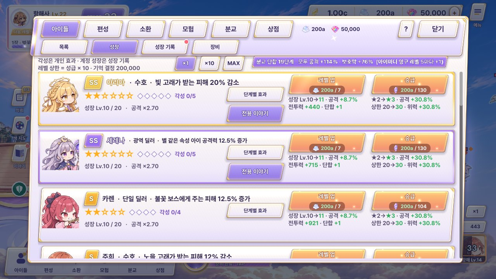
img/after/menu_growth_1280x720.jpg
D1-3 d
성장 (영구 레벨 · 승급)
scripts/menus.gd _growth · _growth_row
지금: 한 줄에 글자 7~8줄, 버튼 넷.
방향: 「진주로 키우는 화분」 — 한 줄에 숫자 둘(성장 Lv · ★)과 큰 버튼 둘만, 자세한 수치는 누를 때.
- 시안에 담을 상태
- 레벨 업 가능 · 진주 부족 · 레벨 상한 · 승급 가능 / 결정 부족 · 각성 단계 · ×1 / ×10 / MAX · 레벨 업 순간(#45 빛 고리 유지) · 분교 단합 띠
- 시안 방향
- A 얇은 줄 목록 — 줄 높이 절반, 비용은 알약
- B 한 아이 집중 — 왼쪽 목록 + 오른쪽 큰 성장판
- C 4열 타일 + 아래에서 올라오는 시트

img/after/gear_list_1280x720.jpg
D1-4 d
장비 목록 (아이 · 착용 4칸 · 가방)
scripts/menus.gd _gear · _gear_card
지금: 작업대(A)와 달리 옛 세 칸 판 그대로.
방향: 작업대와 이어지는 「공방 선반」 — 착용 4칸은 아이 SD 둘레, 가방은 서랍.
- 시안에 담을 상태
- 4칸 꽉 참 / 빈 칸 · 가방 비어 있음 / 30개 이상 · 부위 탭 · 도감 · 색가루 · 일괄 연성 가능 · ⓘ
- 시안 방향
- A 마네킹 + 서랍
- B 페그보드 벽 — 부위별 고리에 걸린 장비
- C 가방 중심 격자 + 위쪽 착용 띠
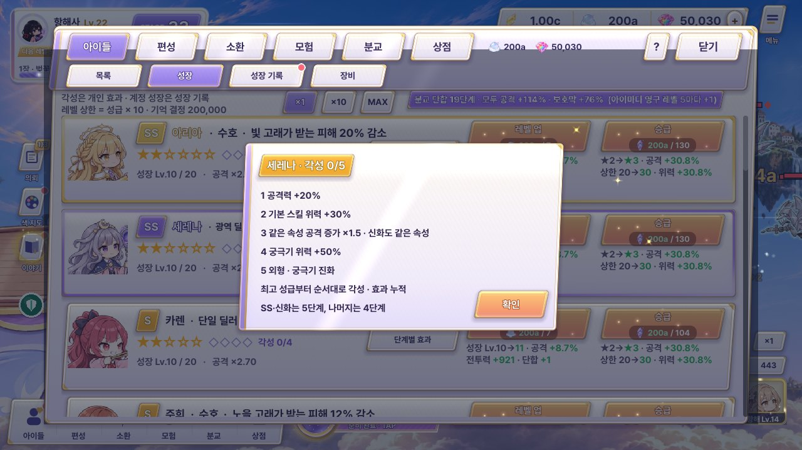
img/inventory/inv_awaken_steps_1280x720.jpg
D1-5 d
각성 단계별 효과 창
scripts/menus.gd _result_panel (성장 「단계별 효과」)
지금: 공용 결과 창에 글자 목록.
방향: 「별자리 잇기」 — 다섯 단계를 이은 별자리, 지금 단계까지 빛남.
- 시안에 담을 상태
- 0/5 · 3/5 · 5/5(외형 · 궁극기 진화) · 4단계 아이(S 이하) · SS(속성 색) · 신화(무지개)
- 시안 방향
- A 별자리
- B 아래에서 위로 오르는 각성 계단
- C 카드 뒷면에 새겨진 각인
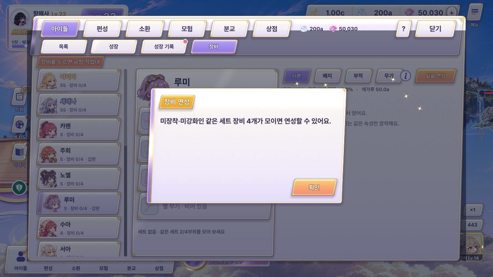
img/inventory/inv_gear_merge_1280x720.jpg
D1-6 d
장비 연성 · 잠재 등급 상승 결과 창
scripts/menus.gd 「일괄 연성」 → _result_panel · scripts/ui/gear_bench.gd 「잠재 등급 상승!」
지금: 각성 창과 같은 공용 결과 창.
방향: 「물감 섞기」 — 네 개가 하나로 섞여 새 장비 카드가 나옴.
- 시안에 담을 상태
- 연성 n개 성공 · 연성할 것 없음(안내) · 잠재 등급 상승
- 시안 방향
- A 팔레트 위 네 방울이 하나로
- B 가마에서 꺼낸 카드
- C 창 없이 작업대 위 리본 알림
2 · 접속 · 레벨 업 알림 d · 4

img/after/start_popup_1_1280x720.jpg
D2-1 d
출석 보상
scripts/economy.gd check_attendance → RewardPopup
지금: 공용 보상 판에 채색석 한 칸.
방향: 「분교 출석부 도장」 — 이번 주 7칸, 오늘 칸에 도장이 찍힘.
- 시안에 담을 상태
- 1일째 · 7일째 · 월정액 몫 포함 · 이어서 항해일지가 뜨는 순서
- 시안 방향
- A 출석부 펼침 + 도장
- B 고래 우편 봉투
- C 창 없이 위쪽 7칸 띠
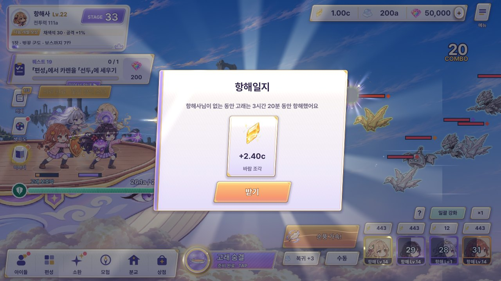
img/inventory/inv_logbook_1280x720.jpg
D2-2 d
항해일지 (방치 보상)
scripts/hud.gd show_logbook
방향: 「항해 일지 한 쪽」 — 떠나 있던 시간 · 지나온 항로 · 모은 바람 조각을 손글씨로.
- 시안에 담을 상태
- 10분 · 3시간 · 8시간(상한) · 출석 보상과 연달아
- 시안 방향
- A 가죽 일지 펼침
- B 항로 지도 점선
- C 돌아온 고래 그림 카드 + 숫자 한 줄

img/inventory/inv_acct_levelup_1280x720.jpg
D2-3 d
항해사 레벨 업 · 새 콘텐츠 열림
scripts/main.gd add_exp → RewardPopup
방향: 「계급장 수여 + 문 열림」 — 큰 레벨 숫자, 열린 콘텐츠 그림 카드가 펼쳐지고 하단 메뉴 자물쇠가 풀림.
- 시안에 담을 상태
- 레벨 업만(채색석 30) · 새 콘텐츠 1개 · 2개 · 두 레벨 연속
- 시안 방향
- A 금빛 계급장
- B 새 콘텐츠 문 열림
- C 창 없이 위쪽 띠 + 메뉴 아이콘이 풀림

img/inventory/inv_toast_ok_1280x720.jpg
D2-4 d
완료 알림 토스트 (추천 편성 · 새 덱 탭 · 되돌림 · 신화 1명 제한)
scripts/hud.gd system_msg
지금: 잠금 안내와 같은 어두운 알약.
방향: 「붙였다 떼는 메모」 — 해낸 일은 금빛, 막힌 일은 회색 메모.
- 시안에 담을 상태
- 성공 한 줄 · 두 줄(이유) · 제한 안내 · 메뉴 위 / 전투 위
- 시안 방향
- A 메모지
- B 붓 한 획 띠
- C 유나 얼굴 + 한 줄
잠금 안내(#11)는 (b) rewards 시안 — 자리 · 크기를 그쪽과 맞춘다.
3 · 복귀 루프 d · 4
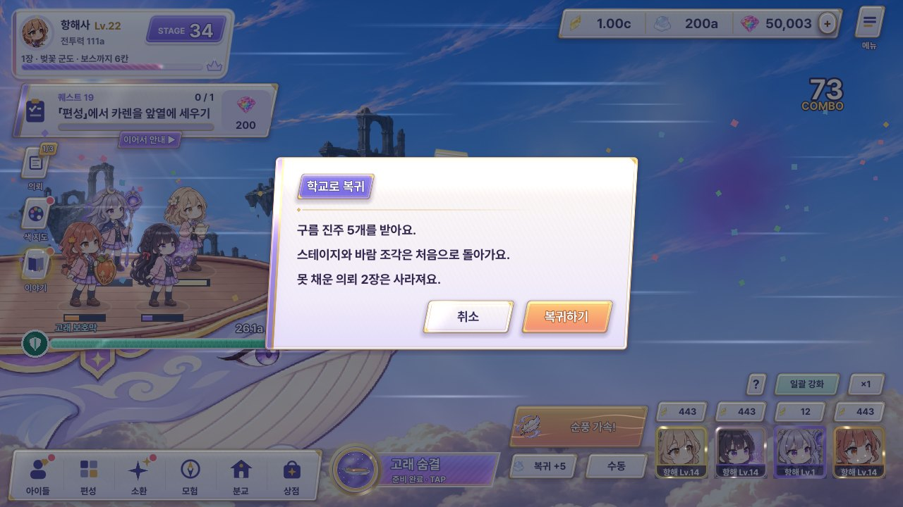
img/after/return_ask_1280x720.jpg
D3-1 d
학교로 복귀 확인
scripts/hud.gd _ask_return
방향: 「귀항 승선권」 — 받는 진주와 처음으로 돌아가는 것을 양쪽에.
- 시안에 담을 상태
- 진주 n개 · 복귀 퀘스트 손가락 안내 중 · 1600
- 시안 방향
- A 승선권 (절취선)
- B 저울 판 — 남는 것 / 처음으로
- C 학교를 바라보는 고래 그림 카드
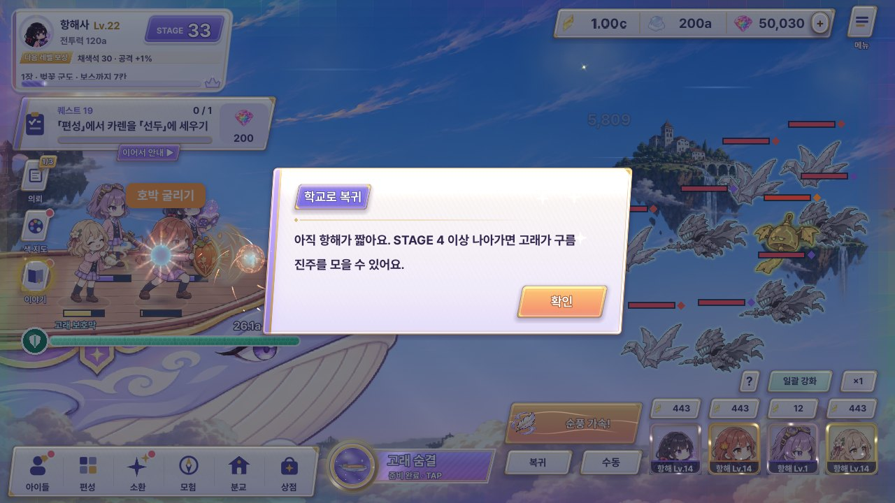
img/inventory/inv_return_short_1280x720.jpg
D3-2 d
복귀 불가 안내 (짧은 항해)
scripts/hud.gd _ask_return (진주 0)
방향: 창 대신 복귀 버튼 위 말풍선 + 「STAGE 4까지」 진행 막대.
- 시안에 담을 상태
- STAGE 1 · STAGE 3
- 시안 방향
- A 버튼 위 말풍선
- B 작은 진행 막대 카드
- C 유나 한마디
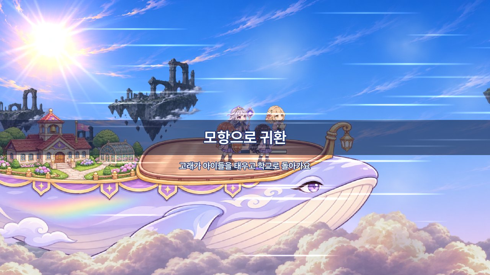
img/after/return_cutscene_f2_1280x720.jpg
D3-3 d
귀환 연출 띠 「모항으로 귀환」
scripts/hud.gd return_banner · white_flash
방향: 「항해 끝」 — 고래가 뱃머리를 돌리고 제목이 붓으로 칠해짐.
- 시안에 담을 상태
- 시작 · 가운데 · 흰 섬광 · 학교 도착 (프레임 띠)
- 시안 방향
- A 붓 띠 제목
- B 항로 지도가 접힘
- C 노을 하늘 전환
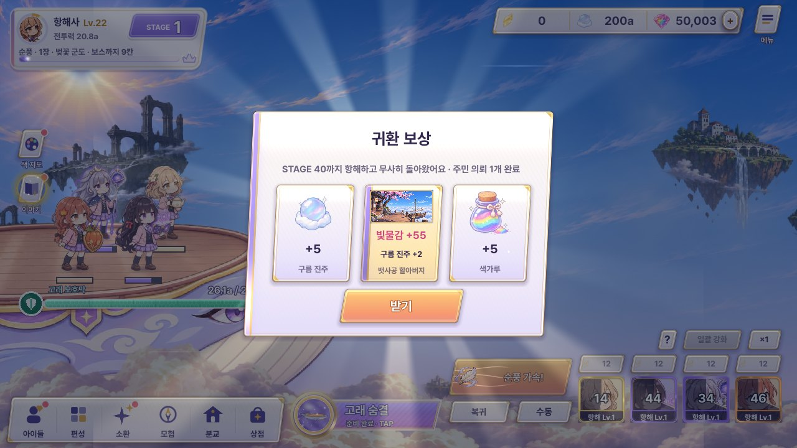
img/after/return_reward_1280x720.jpg
D3-4 d
귀환 보상
scripts/main.gd return_to_school → RewardPopup 「귀환 보상」
방향: 「분교 도착 환영」 — 진주 + 이번 항해 기록(최고 STAGE).
- 시안에 담을 상태
- 진주만 · 기록 갱신 · 복귀 퀘스트 완료와 연달아
- 시안 방향
- A 분교 정문 환영 카드
- B 진주 항아리가 차오름
- C 기록 리본
4 · 모험 허브 · 콘텐츠 d · 6
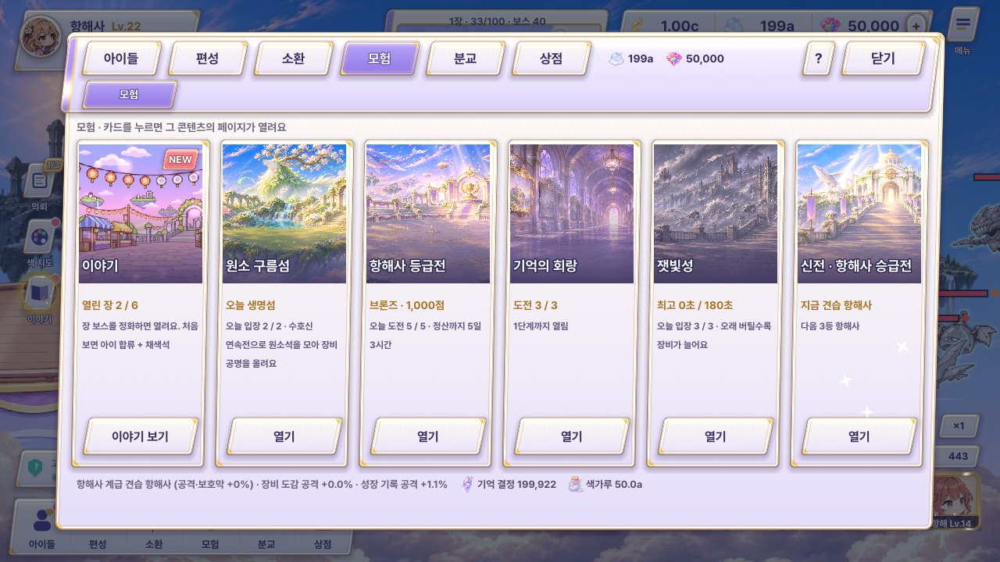
img/after/adventure_hub_1280x720.jpg
D4-1 d
모험 허브
scripts/menus.gd _adventure · scripts/adventure_pages.gd hub_card
방향: 「항해도」 — 여섯 곳이 지도 위 섬, 오늘 열린 곳이 빛남.
- 시안에 담을 상태
- 오늘 열린 섬 · 입장권 0 · 잠김(항해사 Lv) · NEW · 정산까지 남은 시간 · 아래 보너스 줄
- 시안 방향
- A 지도 위 섬
- B 여행 포스터 6장
- C 오늘 추천 하나 크게 + 작은 다섯
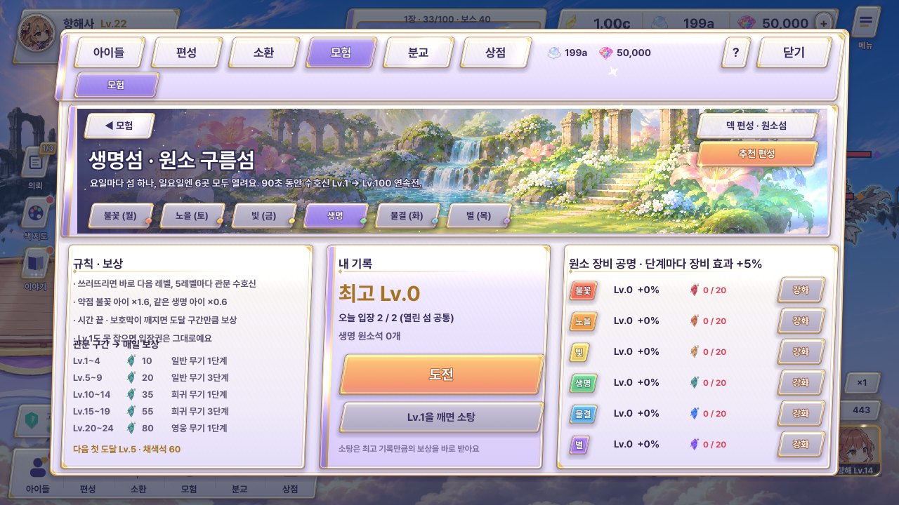
img/after/adv_element_1280x720.jpg
D4-2 d
원소 구름섬
scripts/adventure_pages.gd _element
방향: 「요일 섬 회전판 + 수호신 레벨 사다리」.
- 시안에 담을 상태
- 오늘 섬 · 일요일 6곳 · 소탕 가능 · 입장권 0 · 관문 Lv · 원소 공명 단계
- 시안 방향
- A 요일 회전판
- B 세로 수호신 탑
- C 원소 공명 막대 중심
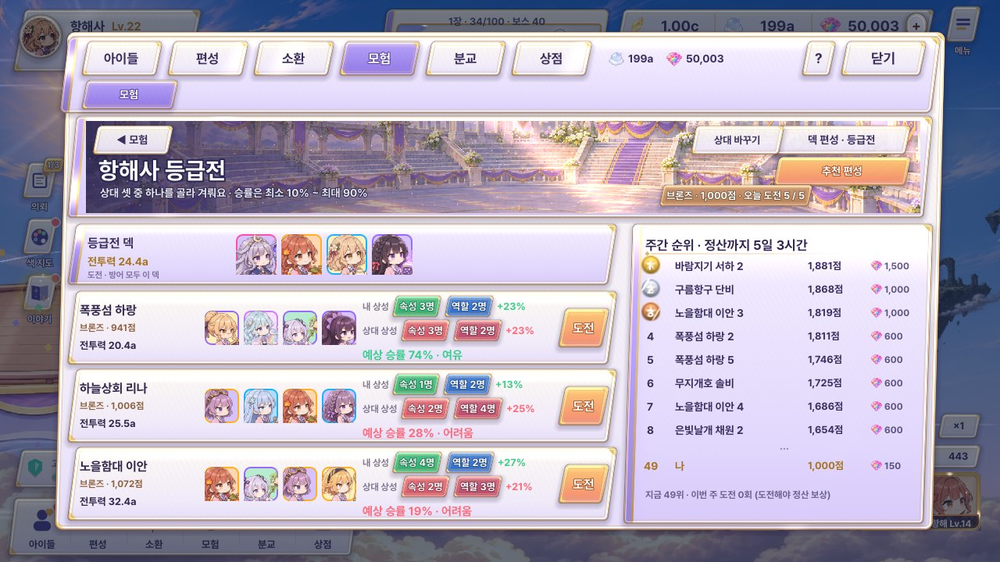
img/after/adv_rank_1280x720.jpg
D4-3 d
항해사 등급전
scripts/adventure_pages.gd _rank
방향: 「리그 보드」 — 상대 셋, 내 계급 엠블럼, 정산 시계.
- 시안에 담을 상태
- 상대 셋 · 새로고침 · 도전 0 · 상성 유리 / 불리 · 정산 직후
- 시안 방향
- A 순위 사다리 + 상대 카드
- B 결투장 세 문
- C 트레이딩 카드 셋
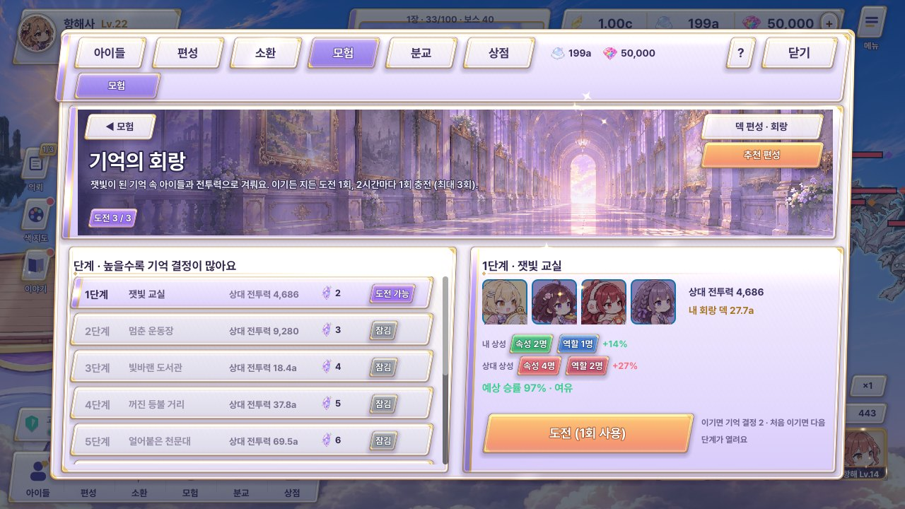
img/after/adv_soul_1280x720.jpg
D4-4 d
기억의 회랑
scripts/adventure_pages.gd _soul
방향: 「기억 액자 복도」 — 1~10단계가 복도에 걸린 액자.
- 시안에 담을 상태
- 충전 3/3 · 0/3(다음 충전 시간) · 열린 / 잠긴 단계 · 승률
- 시안 방향
- A 원근 복도
- B 책장 — 책 등이 단계
- C 원형 회랑 10칸
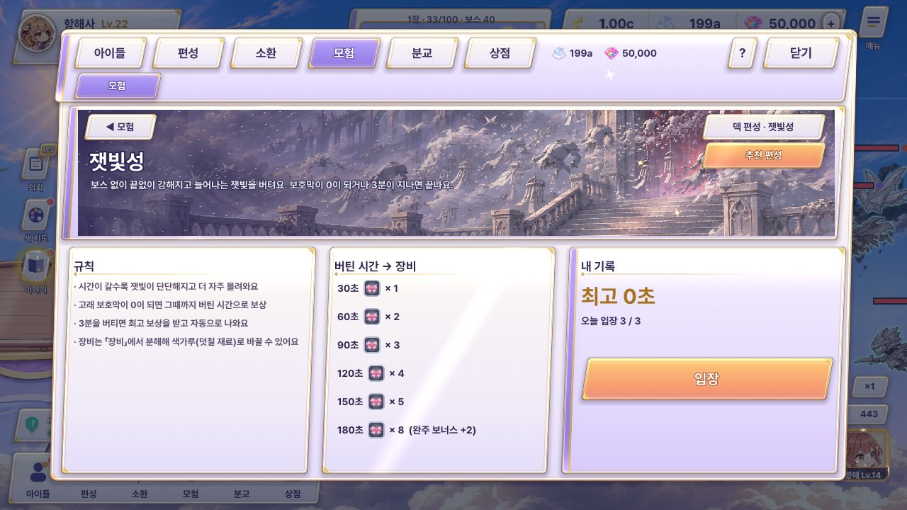
img/after/adv_castle_1280x720.jpg
D4-5 d
잿빛성
scripts/adventure_pages.gd _castle
방향: 「버티는 성벽」 — 버틴 시간 막대와 30초마다 장비 눈금.
- 시안에 담을 상태
- 최고 0초 · 95초 · 180초 완주 · 입장 0
- 시안 방향
- A 모래시계 + 보상 눈금
- B 버틴 만큼 색이 오르는 성벽
- C 가로 타임라인
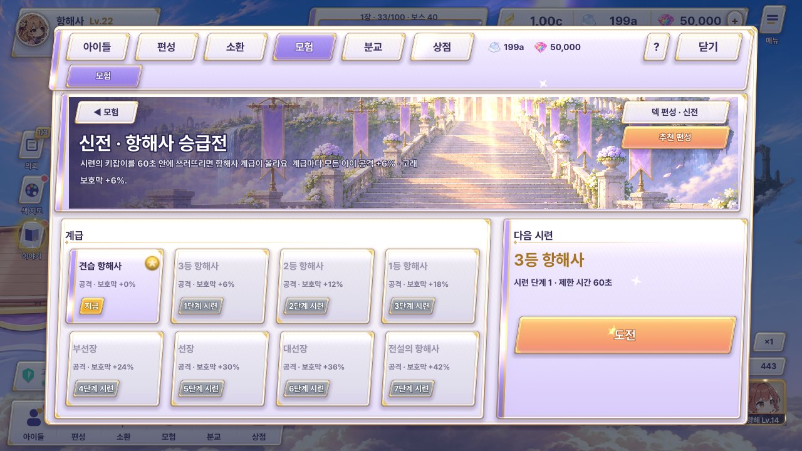
img/after/adv_temple_1280x720.jpg
D4-6 d
신전 · 항해사 승급전
scripts/adventure_pages.gd _temple
방향: 「신전 계단과 계급장」.
- 시안에 담을 상태
- 지금 계급 · 다음 계급 · 도전 · 실패 직후
- 시안 방향
- A 계단 위 신전 문
- B 계급장 진열장
- C 커지는 성화
5 · 모험 결과 · 정산 d · 5

img/inventory/inv_result_castle_1280x720.jpg
D5-1 d
잿빛성 결과 (#62)
scripts/main.gd _dungeon_end castle → RewardPopup
방향: 「버틴 시간 기록판」 — 큰 초 숫자 + 구간 눈금 위에 얻은 장비.
- 시안에 담을 상태
- 95초(장비 3) · 180초 완주(보너스) · 0초(보상 없음) · 최고 기록 갱신
- 시안 방향
- A 모래시계 기록
- B 성벽 위 깃발
- C 타임라인 보상 띠
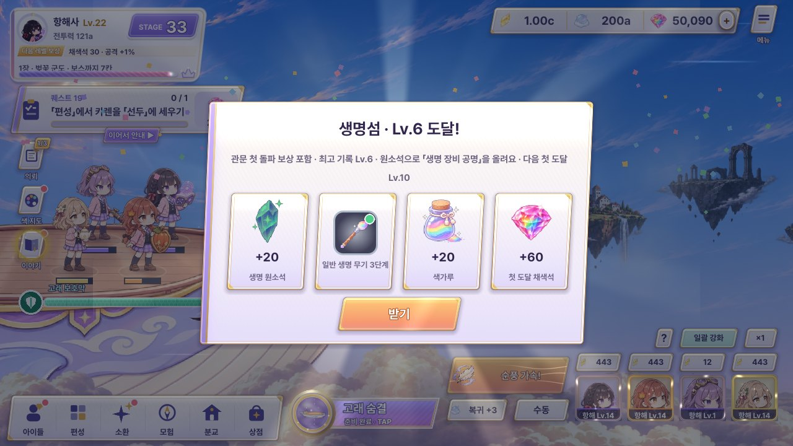
img/inventory/inv_result_element_1280x720.jpg
D5-2 d
원소섬 도달 · 소탕 결과
scripts/main.gd _dungeon_end element · sweep
방향: 「속성 결정 도장」 — 도달 Lv 도장 + 원소석이 그 섬 색으로.
- 시안에 담을 상태
- 도달 · 관문 첫 돌파 포함 · 소탕 · 실패(띠)
- 시안 방향
- A 속성 결정
- B 섬 도장 카드
- C 레벨 사다리 깃발

img/inventory/inv_result_temple_1280x720.jpg
D5-3 d
신전 승급 결과
scripts/main.gd _dungeon_end temple
지금: 별 하나와 「3등 항해사」 글자뿐.
방향: 「계급장 수여식」.
- 시안에 담을 상태
- 승급 · 실패
- 시안 방향
- A 메달 수여
- B 신전 빛기둥
- C 계급 리본
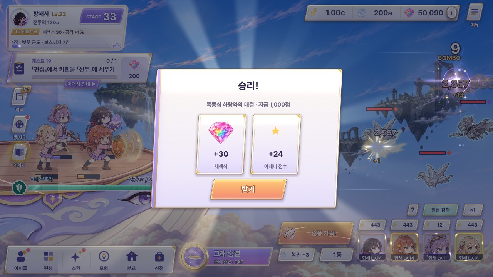
img/inventory/inv_result_rank_1280x720.jpg · img/inventory/inv_result_soul_1280x720.jpg
D5-4 d
등급전 · 회랑 승패 결과
scripts/main.gd arena_fight · soul_fight → RewardPopup
방향: 「대결 결과판」 — 내 덱 vs 상대 덱 얼굴 + 점수 변화.
- 시안에 담을 상태
- 등급전 승리 / 패배 · 회랑 승리(단계 열림) / 패배
- 시안 방향
- A VS 결과판 (양쪽 네 명)
- B 점수 사다리 이동
- C 이긴 아이 한 명 포즈
img/inventory/inv_rank_week_1280x720.jpg
D5-5 d
등급전 주간 정산
scripts/main.gd check_rank_week
방향: 「주간 시상」 — 순위 · 점수 · 채색석.
- 시안에 담을 상태
- 상위권 · 하위(기본 보상) · 도전 안 한 주
- 시안 방향
- A 시상대
- B 리그 증명서
- C 순위 리본
6 · 분교 · 고래 d · 4
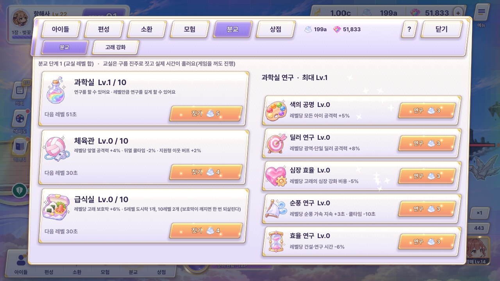
img/after/menu_school_1280x720.jpg
D6-1 d
분교 (교실 · 연구)
scripts/menus.gd _school
방향: 「분교 단면도」 — 교실 셋이 그림 속 방, 연구는 칠판.
- 시안에 담을 상태
- 짓는 중(남은 시간) · 연구 중 · 진주 부족 · 최대 · 과학실 먼저(잠김) · 완성 직후
- 시안 방향
- A 인형집 단면
- B 칠판 · 게시판
- C 고래 등 위 분교 지도
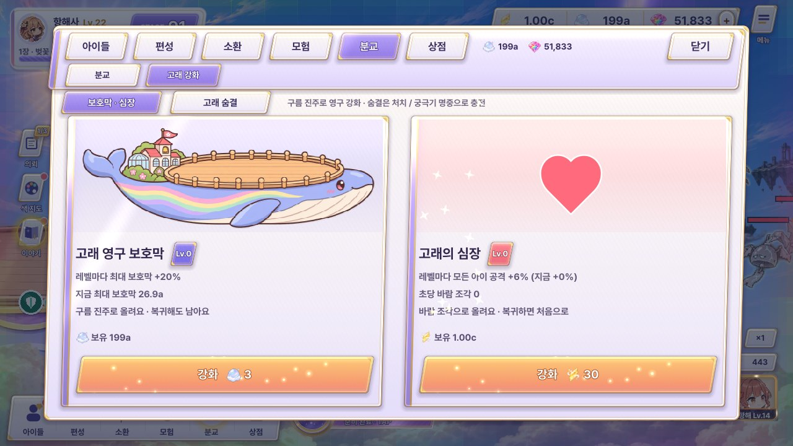
img/after/menu_whale_1280x720.jpg
D6-2 d
고래 강화 (보호막 · 심장)
scripts/menus.gd _whale
방향: 「고래 정비 도크」 — 고래 그림 가운데, 보호막 · 심장이 고래 몸 위 계기.
- 시안에 담을 상태
- 강화 가능 · 부족 · 레벨 업 순간 · 보호막 막대(#41)를 눌러 들어온 경우
- 시안 방향
- A 고래 해부도 (심장 자리 하트)
- B 도크 + 양쪽 계기판
- C 고래 초상 카드 둘 (정돈)

img/inventory/inv_whale_breath_1280x720.jpg
D6-3 d
고래 숨결 강화 탭
scripts/menus.gd _whale_breath
지금: 같은 고래 그림 카드 셋.
방향: 「숨결 진주 구슬 셋」 — 위력 · 충전 · 얼룩.
- 시안에 담을 상태
- 각 Lv.0/20 · 최대 · 자동 숨결 OFF / ON · 첫 사용 전
- 시안 방향
- A 구슬 셋
- B 리본 하나에 세 마디
- C 오선 악보
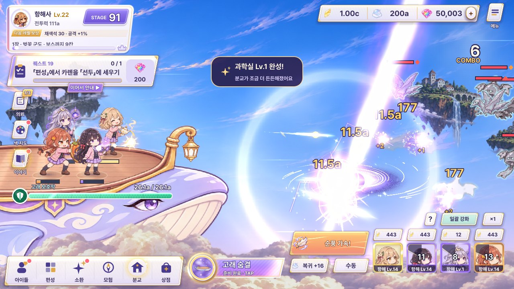
img/after/school_done_f1_1280x720.jpg
D6-4 d
분교 완성 알림 (위쪽)
scripts/hud.gd school_notice
방향: 「분교 종」 — 종 + 짧은 리본, 끝나면 하단 「분교」로 날아감.
- 시안에 담을 상태
- 교실 완성 · 연구 완료 · 둘이 연달아
- 시안 방향
- A 종 + 리본
- B 분필 쪽지
- C 아이콘이 하단 메뉴로 날아감
7 · 안내 · 도움말 d · 4
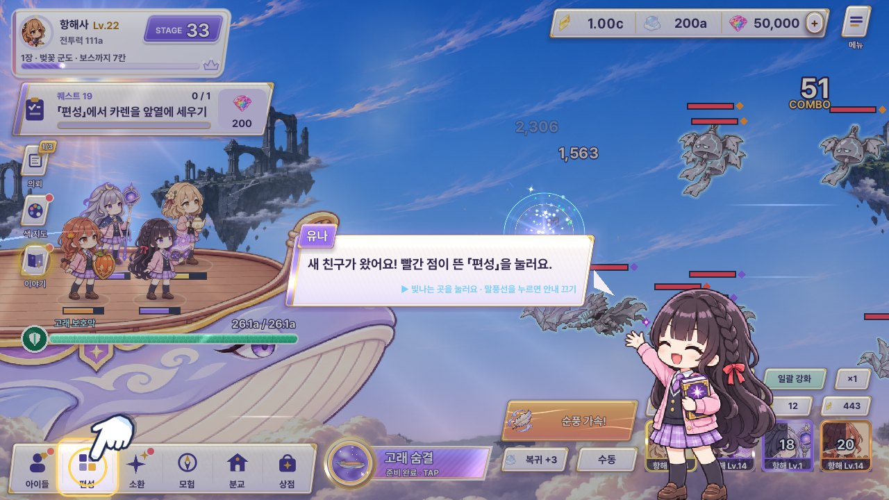
img/after/tut_formation_1280x720.jpg
D7-1 d
튜토리얼 말풍선 (유나)
scripts/tutorial.gd
지금: 메뉴와 같은 크림 판 + 라벤더 이름표.
방향: 「유나의 스케치북 쪽지」 — 손글씨 말풍선, 유나 표정과 이어짐.
- 시안에 담을 상태
- 설명 단계(어두움) · 행동 단계(빛나는 곳) · 여러 칸 1/3 · 유나 왼쪽 / 오른쪽 · 메뉴 위
- 시안 방향
- A 스케치북 쪽지
- B 꼬리 달린 만화 말풍선
- C 아래 대사창 (이야기 대사창과 같은 계열)
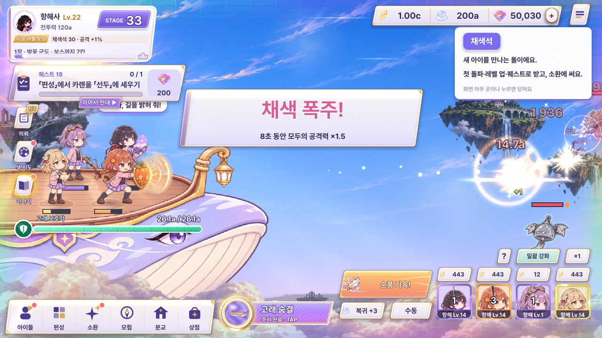
img/inventory/inv_help_bubble_1280x720.jpg · img/inventory/inv_help_page_1280x720.jpg
D7-2 d
도움말 말풍선 (재화 · 표시 · 메뉴 「?」)
scripts/hud.gd show_help · help_button
방향: 「단어장 카드」 — 아이콘 + 한 줄 뜻 + 얻는 곳 / 쓰는 곳 두 칸.
- 시안에 담을 상태
- 재화 셋 · 보호막 · 스테이지 · 메뉴 페이지 「?」 · 화면 가장자리
- 시안 방향
- A 단어장 카드
- B 돋보기 원
- C 얇은 툴팁
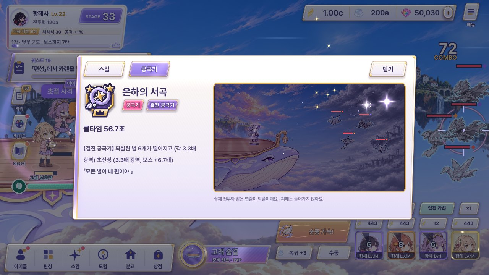
img/inventory/inv_skill_detail_1280x720.jpg
D7-3 d
스킬 상세 창
scripts/skill_detail.gd
방향: 「기술서 한 쪽」 — 왼쪽 설명, 오른쪽 미리보기를 액자 속 무대로.
- 시안에 담을 상태
- 스킬 / 궁극기 탭 · SS 서명 · 신화 · 각성 진화 궁극기 · 전투 위 / 아이 상세 위
- 시안 방향
- A 기술서 펼침
- B 미리보기 크게 + 아래 설명 띠
- C 카드 뒤집기
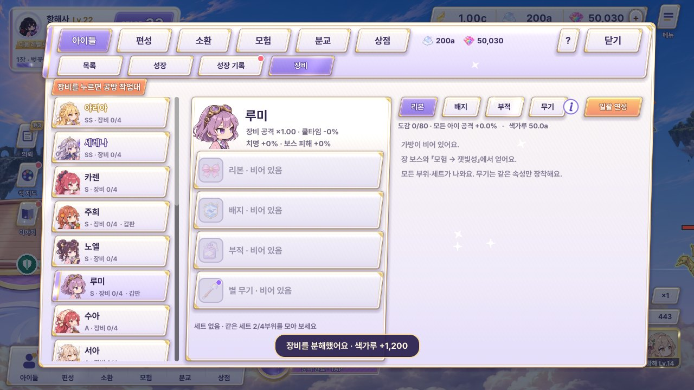
img/inventory/inv_toast_gear_1280x720.jpg
D7-4 d
짧은 한 줄 알림 (장비 분해 등)
scripts/menus.gd _toast · scripts/ui/gear_bench.gd
방향: 「작업대 위 색가루 튐」 — 색가루가 위 지갑으로 날아감.
- 시안에 담을 상태
- 분해 · 연속 분해 · 메뉴 판 아래
- 시안 방향
- A 색가루 병으로 날아감
- B 작은 리본
- C 칠판 글씨
8 · 상점 · 교환 d · 5
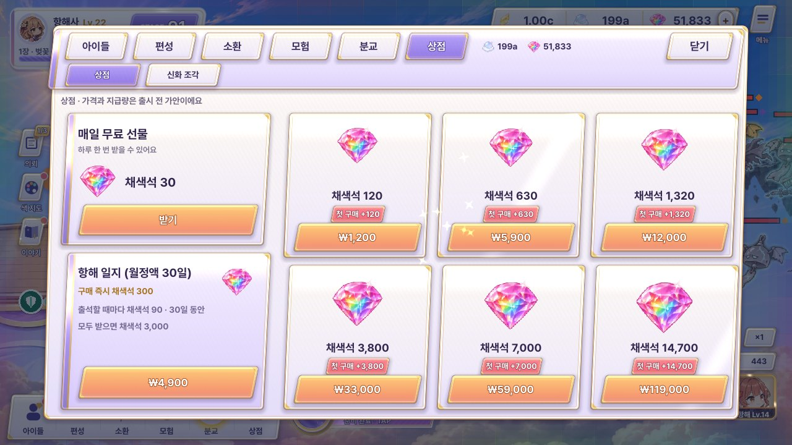
img/after/menu_shop_1280x720.jpg
D8-1 d
상점
scripts/menus.gd _shop · _price_button
방향: 「화방 진열장」 — 채색석이 물감 병처럼 선반에.
- 시안에 담을 상태
- 무료 선물 받기 / 받음 · 첫 구매 2배 · 월정액 남은 일수 · 결제 중
- 시안 방향
- A 선반 진열
- B 가로 쇼케이스
- C 계산대 + 추천 하나 크게
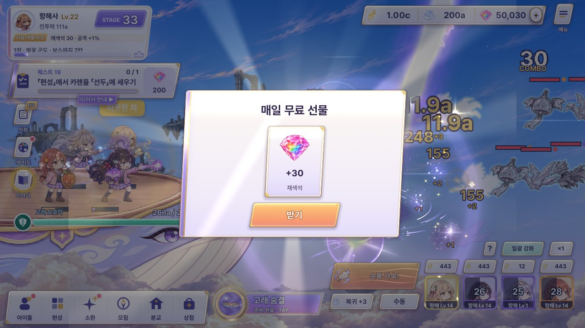
img/inventory/inv_shop_free_1280x720.jpg
D8-2 d
무료 선물 · 구매 완료
scripts/menus.gd _shop → RewardPopup 「매일 무료 선물」 · 「구매 완료」
방향: 「포장 리본 풀기」.
- 시안에 담을 상태
- 무료 30 · 첫 구매 2배 · 월정액 구매
- 시안 방향
- A 선물 상자
- B 영수증 카드
- C 창 없이 진열장에서 지갑으로 날아감
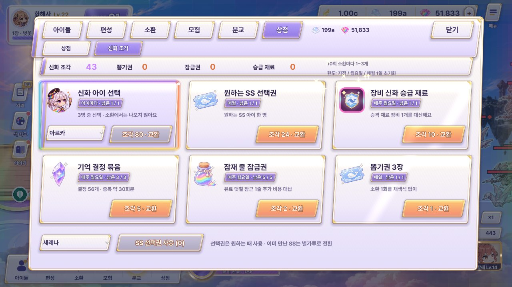
img/after/mythic_shop_1280x720.jpg
D8-3 d
신화 조각 상점
scripts/mythic_shop.gd
방향: 「무지개 보석상」 — 신화 조각 병(소환 시안의 병과 이어짐).
- 시안에 담을 상태
- 조각 부족 · 교환 가능 · 한도 0 · 신화 아이 고르기(드롭다운 대신 카드) · SS 선택권 사용
- 시안 방향
- A 보석상 카운터
- B 조각 병 + 교환 목록
- C 신화 아이 초상 갤러리

img/after/grade_dust_1280x720.jpg
D8-4 d
별가루 교환소
scripts/menus.gd _dust_panel
방향: 「별 병 교환」 — 왼쪽 결정 바꾸기, 오른쪽 아이 데려오기.
- 시안에 담을 상태
- 별가루 부족 · 가능 · 픽업 · SS 카드
- 시안 방향
- A 별 병 + 교환 카드
- B 별자리 지도
- C 두 칸 저울
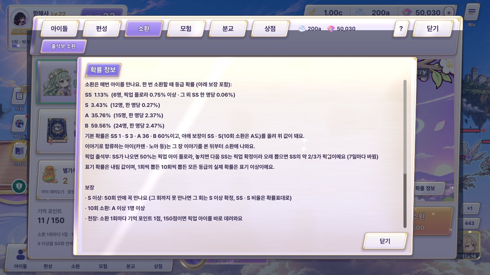
img/inventory/inv_summon_rates_1280x720.jpg
D8-5 d
소환 확률 정보
scripts/menus.gd _rates_panel
지금: 긴 글 벽.
방향: 「공시표」 — 등급 막대 + 보장 세 개를 아이콘으로, 아이 목록은 접기 (숫자 · 문구는 그대로).
- 시안에 담을 상태
- 픽업 / 상시 · 아이 목록 펼침 · 스크롤 끝
- 시안 방향
- A 표 + 막대
- B 등급 카드 넷
- C 요약 위 + 전체 표기 아래
9 · 이야기 d · 6
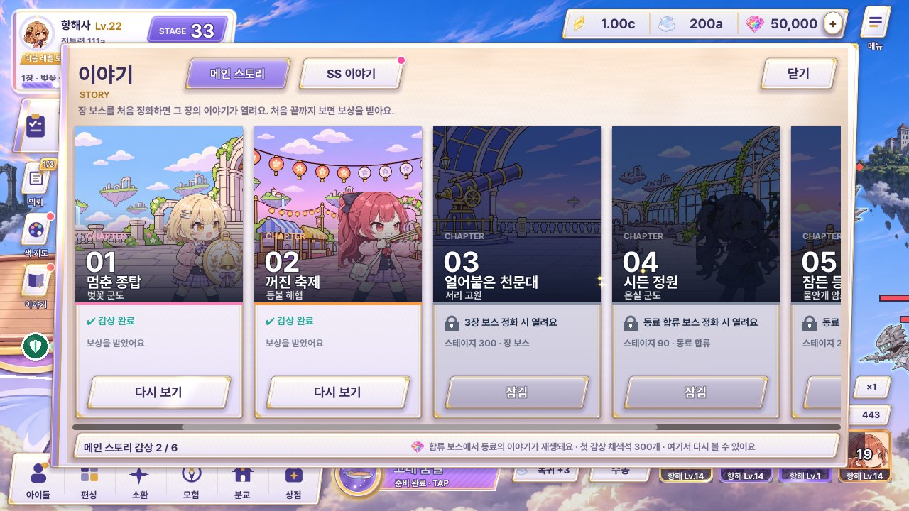
img/after/story_menu_1280x720.jpg
D9-1 d
이야기 목록 · 메인 스토리
scripts/story_menu.gd (main)
방향: 「그림책 책장」 — 장마다 동화책 표지.
- 시안에 담을 상태
- 감상 완료 · 새로 열림 · 잠김(조건) · 보상 받기 전
- 시안 방향
- A 책장
- B 엽서 앨범
- C 항로 타임라인
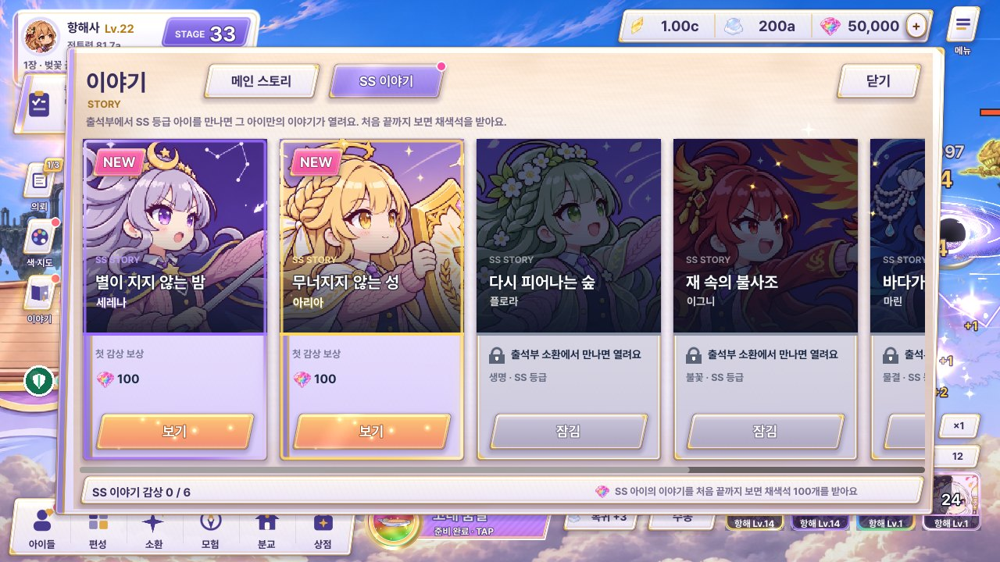
img/after/grade_ss_story_1280x720.jpg
D9-2 d
이야기 목록 · SS 이야기
scripts/story_menu.gd (ss)
방향: 「아이별 일기장」.
- 시안에 담을 상태
- 만남 · 못 만남 · 새 이야기 · 속성 색
- 시안 방향
- A 일기장 표지
- B 초상 액자
- C 편지 봉투
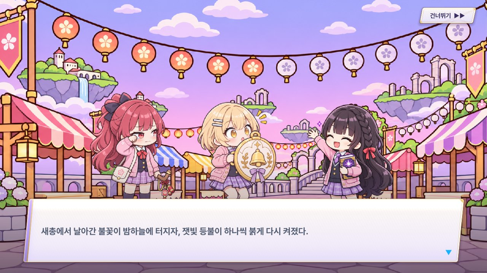
img/inventory/inv_story_scene_1280x720.jpg
D9-3 d
이야기 장면 (대사창)
scripts/story_player.gd
방향: 블루아카이브풍 대사창은 유지, 종이결 · 붓 이름표로 아틀리에답게.
- 시안에 담을 상태
- 내레이션 · 대사(이름표) · 항해 일지 · 건너뛰기 · 배경 없이 전투 위(모험 첫 소개 · 색 지도 이야기)
- 시안 방향
- A 종이결 대사창
- B 반투명 유리 + 붓 이름표
- C 그림책 자막
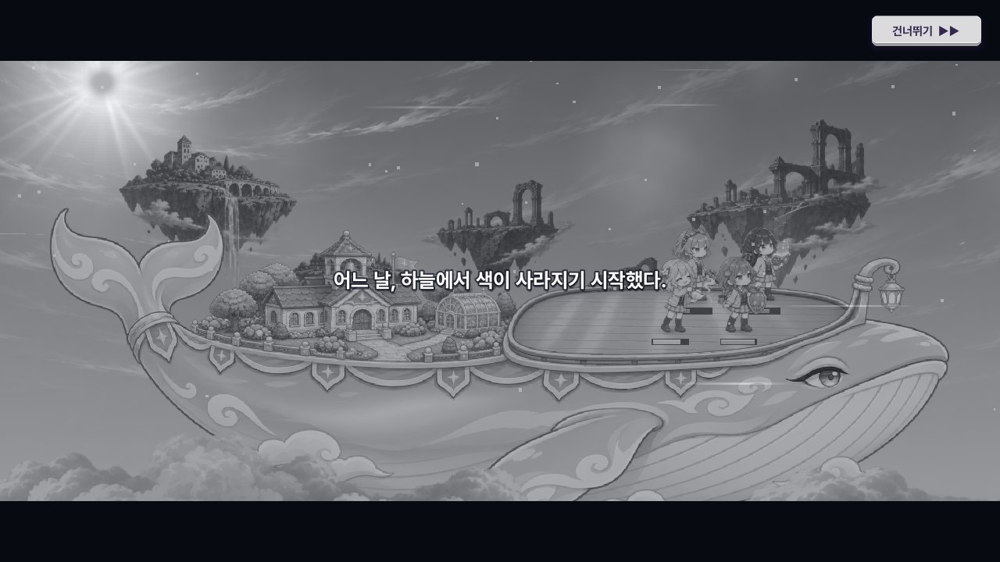
img/inventory/inv_prologue_f1_1280x720.jpg · img/inventory/inv_prologue_f2_1280x720.jpg
D9-4 d
프롤로그 (첫 실행 · 다시 보기)
scripts/prologue.gd
방향: 「잿빛에서 색으로」 — 레터박스 자막을 손글씨로, 색이 번질 때 붓.
- 시안에 담을 상태
- 내레이션 · 고래 등장 · 색 번짐 · 유나 대화 · 건너뛰기
- 시안 방향
- A 손글씨 자막
- B 그림책 넘김
- C 붓이 화면을 칠하며
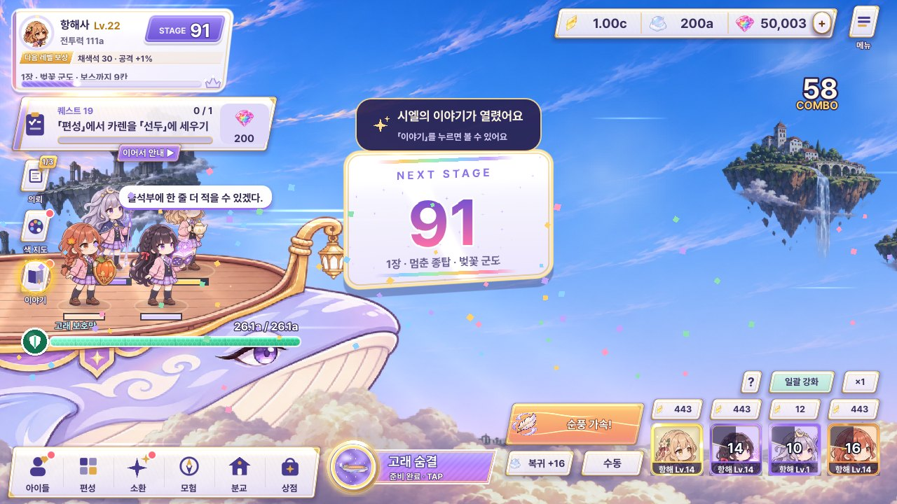
img/after/story_auto_scene_f2_1280x720.jpg
D9-5 d
이야기 열림 알림 (위쪽)
scripts/hud.gd story_notice
방향: 「책갈피 리본」이 「이야기」 버튼으로 날아감.
- 시안에 담을 상태
- 장 이야기 · SS 아이 이야기 · 스테이지 전환 카드와 함께
- 시안 방향
- A 책 리본
- B 아이 얼굴 미니 카드
- C 반짝임만
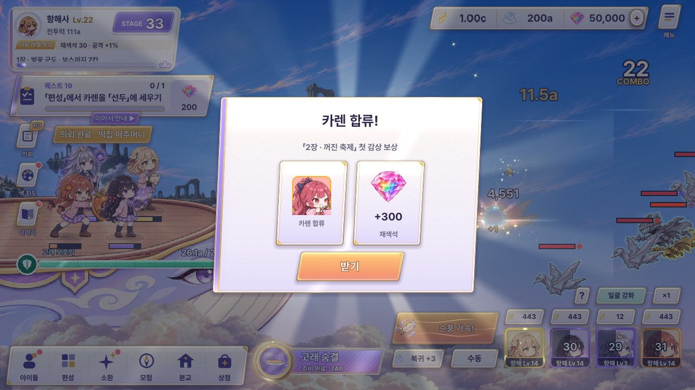
img/inventory/inv_story_reward_1280x720.jpg
D9-6 d
첫 감상 보상 · 아이 합류
scripts/main.gd on_story_read · on_ss_story_read
방향: 「책을 덮고 받는 도장」 — 합류한 아이를 크게.
- 시안에 담을 상태
- 아이 합류 + 채색석 · SS 이야기 채색석만
- 시안 방향
- A 책 덮기 + 도장
- B 엔딩 카드
- C 합류 아이 클로즈업
10 · 설정 d · 4
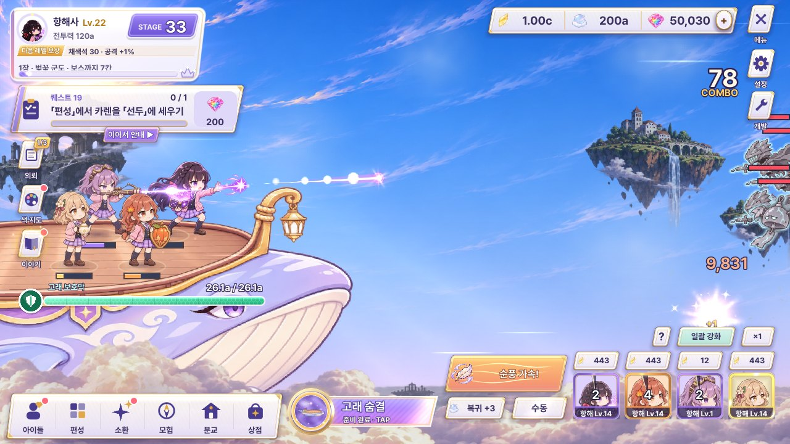
img/inventory/inv_more_menu_1280x720.jpg
D10-1 d
오른쪽 위 「메뉴」 펼침
scripts/hud.gd toggle_more
방향: 출시 판 항목이 「설정」 하나뿐 — 펼침을 없애고 바로 설정을 여는 안 포함.
- 시안에 담을 상태
- 출시(설정만) · 개발 빌드(설정 + 개발)
- 시안 방향
- A 펼침 없앰 (톱니 하나)
- B 작은 드롭다운 카드
- C 세로 동그라미 정돈
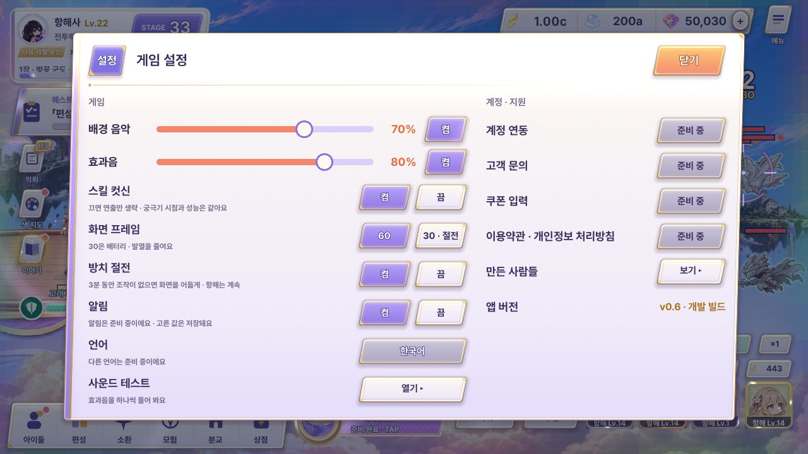
img/inventory/inv_settings_1280x720.jpg
D10-2 d
설정
scripts/settings_panel.gd
방향: 「분교 교무수첩」 — 켬 / 끔이 물감 스위치.
- 시안에 담을 상태
- 기본값 · 30 절전 · 준비 중 항목 · 1600
- 시안 방향
- A 수첩 두 쪽
- B 탭 (게임 · 알림 · 계정)
- C 카드 격자
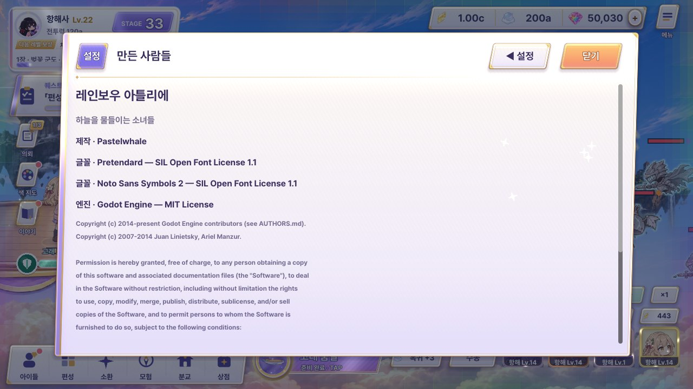
img/inventory/inv_credits_1280x720.jpg
D10-3 d
만든 사람들
scripts/settings_panel.gd (credits)
방향: 「전시회 명판」 — 제작 · 글꼴 · 엔진, 라이선스 전문은 접기.
- 시안에 담을 상태
- 위 · 아래로 스크롤 · 라이선스 펼침
- 시안 방향
- A 명판
- B 흐르는 크레딧
- C 그림책 판권면
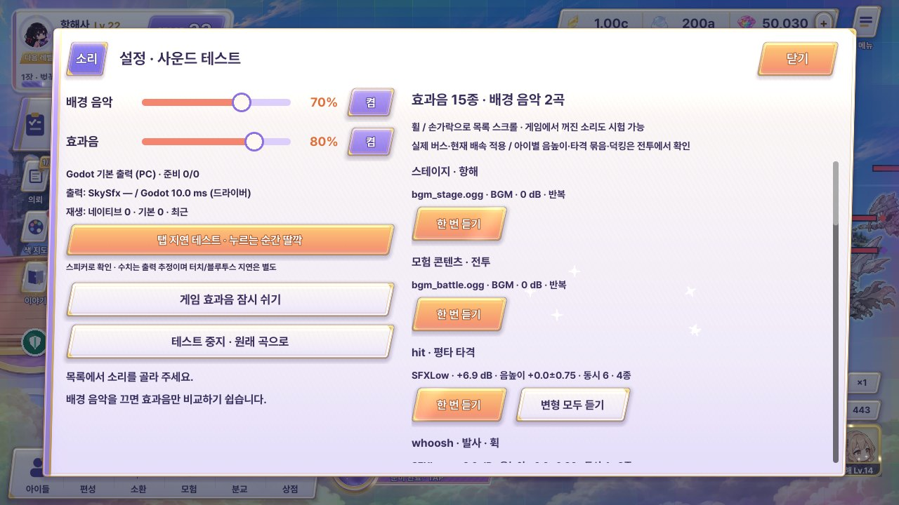
img/inventory/inv_sound_1280x720.jpg
D10-4 d
소리 창 (사운드 테스트)
scripts/sound_panel.gd
지금: 출력 장치 · dB 같은 QA 정보가 그대로 보임.
방향: PD 결정 — 출시 판에 「소리 듣기」로 남길지, 개발 메뉴로 옮길지.
- 시안에 담을 상태
- 재생 중 · 정지 · 배경 음악 끔
- 시안 방향
- A 축음기 레코드 목록 (기술 수치 숨김)
- B 개발 메뉴로 이동 — 설정에서 빠진 모습
- C 음악 상자
11 · 시스템 안내 d · 4
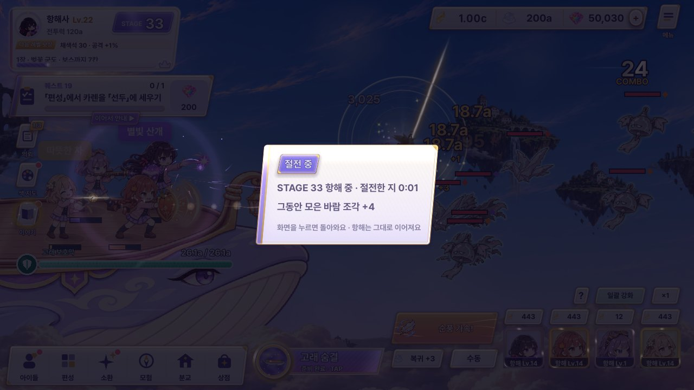
img/inventory/inv_power_save_1280x720.jpg
D11-1 d
방치 절전 화면
scripts/power_save.gd
방향: 「잠든 고래 밤하늘」.
- 시안에 담을 상태
- 막 절전 · 10분 · 연출 중(STAGE 없음)
- 시안 방향
- A 밤하늘 고래 실루엣
- B 시계 하나
- C 아래 작은 카드
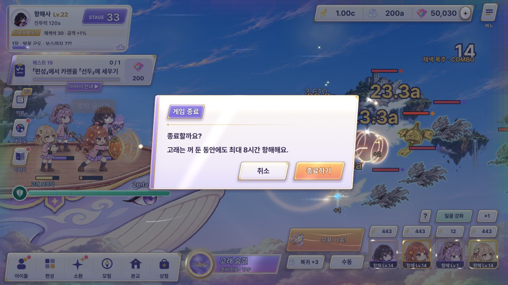
img/inventory/inv_quit_1280x720.jpg
D11-2 d
게임 종료 확인
scripts/back_nav.gd ask_quit
방향: 「배웅」 — 손 흔드는 아이 + 「최대 8시간 항해」.
- 시안에 담을 상태
- 전투 위 · 타이틀 위 · 이야기 위
- 시안 방향
- A 배웅하는 아이
- B 고래 등불 끄기
- C 작은 확인 카드
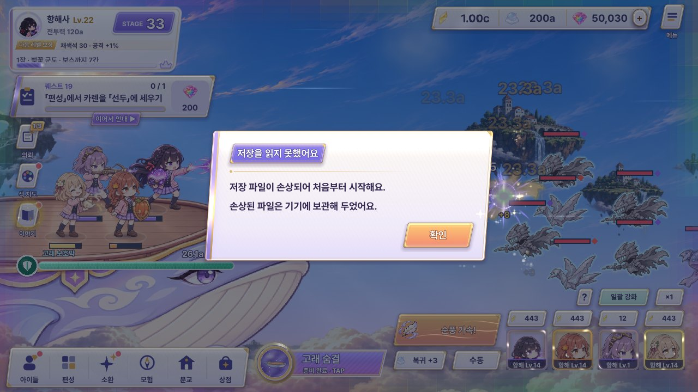
img/inventory/inv_save_corrupt_1280x720.jpg
D11-3 d
저장 손상 안내
scripts/main.gd _notify_corrupt_save
방향: 차분한 시스템 카드 — 되살린 날짜 · 무엇이 사라졌는지.
- 시안에 담을 상태
- 백업에서 되살림 · 처음부터
- 시안 방향
- A 일지의 찢긴 쪽
- B 단정한 시스템 카드
- C 유나 사과
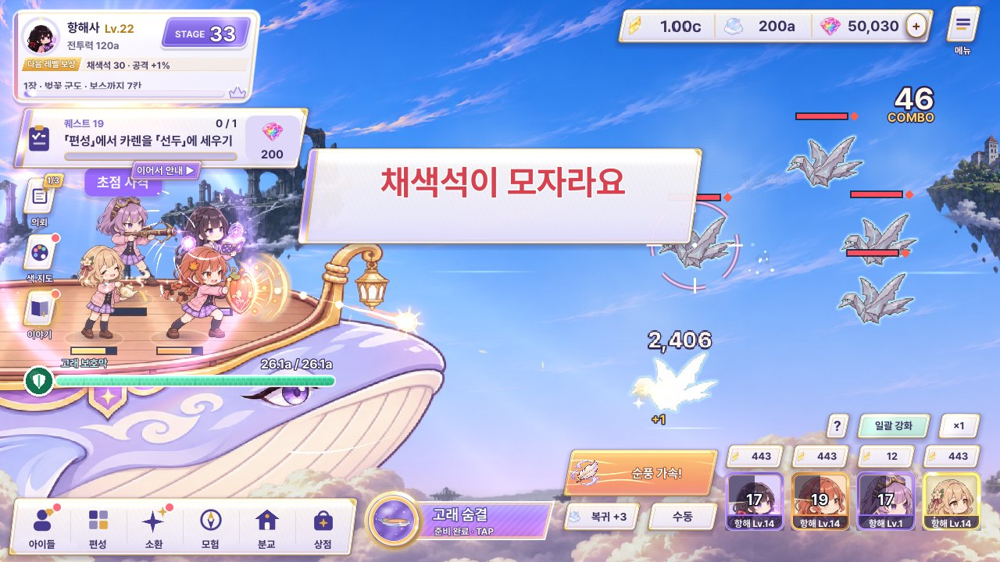
img/inventory/inv_banner_fail_1280x720.jpg
D11-4 d
비전투 알림 띠 (구매 실패 · 기기 시간 확인)
scripts/economy.gd tell · warn_clock → hud.banner
지금: 전투 띠와 같은 큰 띠에 빨간 글자.
방향: 「경고 리본」 — 누른 버튼 근처의 작은 붉은 리본.
- 시안에 담을 상태
- 채색석 부족 · 색가루 부족 · 재료 부족 · 기기 시간 · 서버 실패
- 시안 방향
- A 붉은 리본
- B 완료 알림(D2-4)과 같은 자리, 색만 다름
- C 버튼 흔들림 + 말풍선
전투 화면 — 남은 UI 전부 다시 그리기 d · 24
그대로 두는 것 (확정 · 진행 중)
- a 전투 HUD B: 왼쪽 위 통합 판(항해사 · STAGE · 계정 줄 · 진행 막대) · 기운 보스 판(약점 알약 · 노란 지연 몫) · 고래 보호막 막대 · 스테이지 전환 카드 (A2)
- a 고래 숨결 버튼 · 연출 (A9) · 궁극기 컷인 A (A7) · 손가락 안내 · 강조 테두리 · 「이어서 안내」 꼬리표 (A8) · 길게 눌러 여는 아이 정보 = 아이 상세 A (A4)
- b 정화 CLEAR · 채색 폭주(가장자리 빛 · 폭주 콤보 엠블럼 · 띠) · 순풍 가속 연출 · 띠 — fb-mockups-rev가 B안 수정 중 (B3). 잠긴 버튼을 눌렀을 때 알림 (B7)
- c 왼쪽 「의뢰」 칸 · 저절로 펼쳐지는 의뢰 창 · 의뢰 완료 토스트 (C1 · C2, #49)
- 확정된 HUD B의 말투를 잇는다: 14° 기운 판 · 크림→라벤더 판 + 얇은 금 테(정보) · 남색→보라 판 + 금 테(중요 · 적) · 금빛 = 보상 · 준비 완료 · 속성 색 = 그 아이. 등급: SS = 그 아이 속성 색이 흐르는 테, 신화 = 무지개 테.
- 판 · 버튼 모양은 요소마다 전용 (같은 크림 둥근 상자 재사용 금지). 적이 오는 오른쪽 하늘을 지금보다 더 가리지 않는다.
- 1280에서 아래 한 줄(메뉴 바 458 · 숨결 248 · 조작 줄 200 · 스킬칸 4칸 328)이 겹치지 않고, 1600에서는 오른쪽에 붙은 것만 밀려난다. 시안 바탕은 HUD를 숨긴 같은 순간의 전투 캡처라 확정 부품은 지금 모습 그대로 보인다.
전투 묶음 순서 (자주 보는 순)
| 순서 | 묶음 | 요소 | 얼마나 자주 보나 | 시안 |
|---|---|---|---|---|
| 전투 1 | 엄지 구역 (스킬칸 · 강화 · 조작 줄 · 메뉴 바 · 퀘스트) | 5 | 전투 내내 보이고 가장 많이 누른다 | battle_b1 ✔ |
| 전투 2 | 늘 보이는 위 · 옆 + 전투 글자 | 5 | 전투 내내 보임 · 숫자는 초마다 수십 번 | 다음 |
| 전투 3 | 전투 순간 알림 | 5 | 10칸마다 보스 · 강화할 때마다 · 실패할 때 | — |
| 전투 4 | 모험 전투 (#61) | 5 | 매일 입장권 수만큼 | — |
| 전투 5 | 대결 · 하늘 이벤트 | 4 | 하루 몇 번 · 켜 둔 15분마다 | — |
전투 위에 뜨지만 다른 묶음 · 시안에서 다루는 것
| 무엇 | 어디서 |
|---|---|
| 항해일지 (돌아왔을 때 전투 위 팝업) | D2-2 |
| 완료 알림 토스트 (추천 편성 · 새 덱 탭 · 신화 1명 제한) | D2-4 |
| 복귀 확인 · 복귀 불가 · 귀환 연출 띠 · 귀환 보상 | D3-1 · D3-2 · D3-3 · D3-4 |
| 모험이 끝난 뒤 결과 팝업 (잿빛성 · 원소섬 · 신전 · 등급전 · 회랑) | D5-1 ~ D5-4 |
| 분교 완성 알림 · 이야기 열림 알림 (화면 위쪽) | D6-4 · D9-5 |
| 튜토리얼 말풍선 · 「?」 도움말 말풍선 | D7-1 · D7-2 |
| 오른쪽 위 「메뉴」 펼침 (설정 · 개발) | D10-1 |
| 잠긴 버튼 알림 · 정화 · 폭주 · 순풍 연출 · 의뢰 | B7 · B3 · C1 · C2 |
전투 1 · 엄지 구역 d · 5 전투

img/battle/b1_hud_1280x720.jpg · img/battle/bt_cards_poor_1280x720.jpg
BT1-1 d 전투
아이 스킬칸 (초상 · 궁극기 쿨타임 · 준비 빛 · 항해 Lv)
scripts/hud.gd _make_card · assets/ui/card_frame.gdshader · ui/grade_style.gd frame
지금: 정사각 초상 4칸이 다른 판과 같은 둥근 상자. 준비 상태가 테두리 빛뿐이라 쿨타임 숫자 칸과 잘 구분되지 않는다.
방향: 「갑판 아이들의 출격 카드」 — HUD B의 기울기를 이어받고, 궁극기 준비가 한눈에 튀어나온다.
- 시안에 담을 상태
- 준비 · 쿨타임(초) · SS(속성 색 테) · 신화(무지개 테) · 강화 순간 · 갑판 3명 이하 · 길게 누르기(아이 정보) · 1600
- 시안 방향
- A 기운 액자 — 위에서 걷히는 남색 베일 + 큰 숫자, 준비 = 금 테 + 「궁극기」 띠
- B 물감 원판 — 둥근 초상, 속성 색 고리가 시계 방향으로 차오름
- C 세로 카드 — 이름 띠 + 상반신, 쿨타임 = 아래에서 차오르는 물감
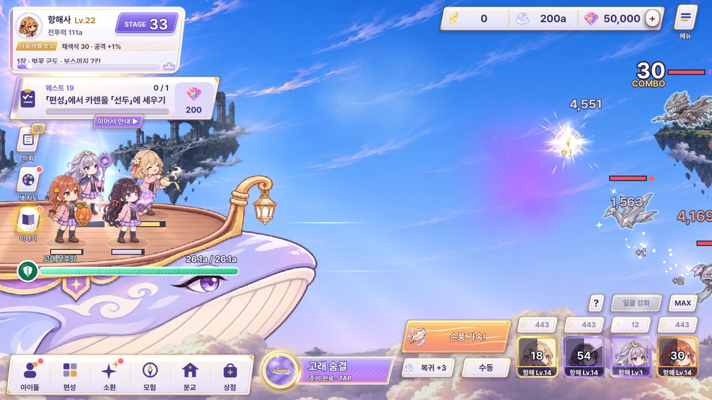
img/battle/bt_cards_poor_1280x720.jpg · img/battle/bt_upgrade_pop_1280x720.jpg
BT1-2 d 전투
강화 버튼 줄 (칸 위 ▲비용 · ? · 일괄 강화 · ×1/×10/MAX)
scripts/hud.gd _make_card up · buy_btn · bulk_btn · help_button("battle") · hold_repeat
지금: 같은 작은 크림 버튼 다섯 종류가 따로 떠 있고, 살 수 없을 때는 흐려지기만 한다. 단위(×1)가 무엇을 바꾸는지 안 보인다.
방향: 「바람 조각을 쓰는 줄」 — 살 수 있음 · 없음 · 단위가 한눈에.
- 시안에 담을 상태
- 살 수 있음 · 부족 · ×10(+10 비용) · MAX(+N 비용) · 누르고 있기(반복) · 일괄 강화 켜짐/꺼짐 · 1600
- 시안 방향
- A 금빛 꼬리표 + ×1 · ×10 · MAX 세 칸 스위치 (지금 단위가 늘 보임)
- B 카드 밑 받침대 — 카드와 버튼이 한 덩어리
- C 모으는 막대 — 비용까지 얼마나 모였는지 버튼 안이 차오름

img/battle/bt_wind_cd_1280x720.jpg · img/battle/bt_wind_on_1280x720.jpg · img/after/hud_fresh_1280x720.jpg (의뢰 창은 c)
BT1-3 d 전투
조작 줄 (순풍 가속 · 복귀 · 자동/수동)
scripts/hud.gd _build_buttons · refresh (wind_btn · return_btn · auto_btn) · ui/lock_gate.gd
지금: 산호 · 크림 · 라벤더 버튼이 제각각, 쿨타임은 글자뿐(「순풍 4:05」), 모험 중에는 이유 없이 흐려진다.
방향: 「전투 손잡이」 — 세 조작을 한 가족으로, 남은 시간은 막대 · 고리로.
- 시안에 담을 상태
- 순풍 준비 · 사용 중(2배속 58초) · 쿨타임(4:05) · 바람 모으는 중(첫 항해) · 모험 중 못 씀(#61) · 복귀 +N · 복귀 잠김(Lv.4) · 자동 · 수동
- 시안 방향
- A 한 판 세 칸 — 남색 기운 판 하나에 순풍 · 복귀 · 자동
- B 순풍 돛 — 순풍이 주인공, 복귀 · 자동은 옆 작은 알약
- C 구슬 셋 — 숨결 구슬과 한 가족인 둥근 버튼 세 개
순풍 연출 · 띠는 B3(clear_fever B)를 따른다. 이 묶음은 버튼만.
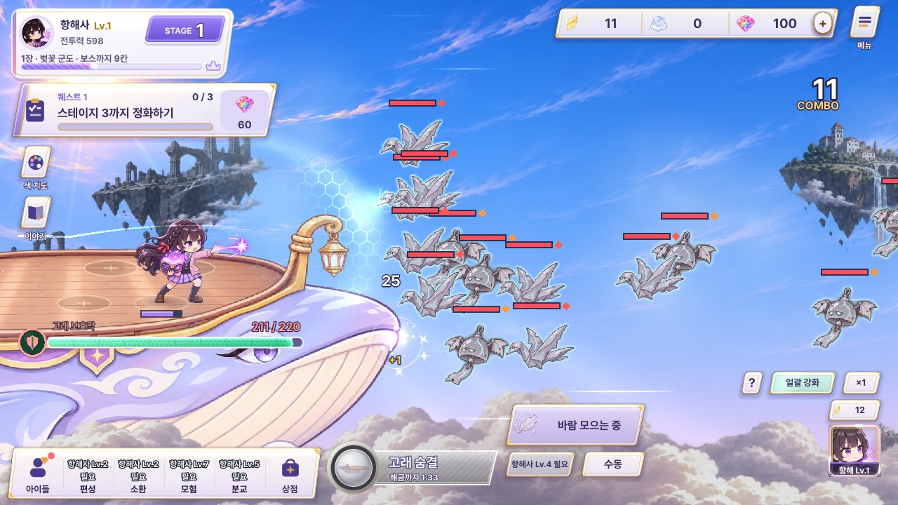
img/after/hud_fresh_1280x720.jpg · img/battle/b1_hud_1280x720.jpg
BT1-4 d 전투
하단 메뉴 바 (아이들 · 편성 · 소환 · 모험 · 분교 · 상점)
scripts/hud.gd _build_resources menu_box · _nav_tile · _badge · _sparkle
지금: 크림 판 한 장에 아이콘 6개. 잠기면 「항해사 Lv.N 필요」 세 줄이 아이콘 자리를 덮고, 빨간 점은 이유가 없다.
방향: 「아틀리에 서랍 손잡이」 — 메뉴 공통 틀(D1-1)의 허브 색을 여기서 먼저 보여 준다.
- 시안에 담을 상태
- 평소 · 빨간 점(할 일) · 잠김(Lv.N) · 분교 반짝임(완성) · 누름 · 1600
- 시안 방향
- A 기운 판 + 허브 물감 방울 — 아이콘마다 허브 색 방울
- B 구름 위 단추 — 판 없이 둥근 단추 여섯 + 이름 리본
- C 남색 띠 + 이유 꼬리표 — 점 대신 「성장 가능」 「무료 소환」
잠김 모양(자물쇠 · 흑백)은 B7(rewards locked)을 따른다.

img/after/quest_ready_1280x720.jpg · img/after/quest_claim_f3_1280x720.jpg · img/battle/b1_hud_1280x720.jpg
BT1-5 d 전투
퀘스트 카드 (진행 · 보상 받기 · 이어서 안내)
scripts/hud.gd _build_quest · _refresh_quest · _on_quest · tutorial.gd resume_tag
지금: 통합 판 아래에 같은 크림 판. 완료되면 금 테 + 손가락. 보상 칸이 작아 무엇을 받는지 약하다.
방향: 「오늘의 할 일 쪽지」 — 통합 판(a)과 이어지는 기울기, 보상이 주인공.
- 시안에 담을 상태
- 진행 중 · 완료(보상 받기) · 받은 뒤 다음 퀘스트 밀려 들어옴 · 이어서 안내 · 긴 문구 · 메뉴가 열리면 숨김
- 시안 방향
- A 기운 리본 — 오른쪽 끝 보상 메달
- B 핀 꽂은 메모지 — 완료 = 붉은 도장
- C 접힌 알약 — 평소 한 줄, 완료 · 누를 때 펼침
전투 2 · 늘 보이는 위 · 옆 + 전투 글자 d · 5 전투
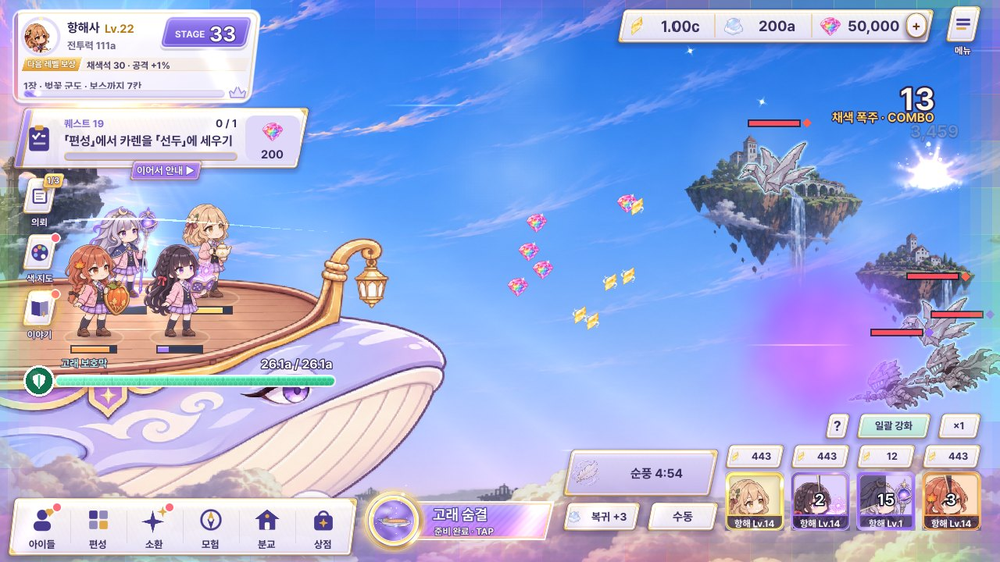
img/after/currency_fly_f4_1280x720.jpg · img/battle/b1_hud_1280x720.jpg
BT2-1 d 전투
오른쪽 위 재화 줄 + 「메뉴」 버튼
scripts/hud.gd _build_resources _chip · more_btn · _fly_reward · fly_gold · help_on
지금: 크림 판 하나에 재화 셋 + 금 「+」(채색석만), 메뉴 버튼은 따로 떠 있다.
방향: 「지갑 띠」 — 빛이 날아와 닿는 자리가 분명하고, 숫자가 오를 때 기쁘게.
- 시안에 담을 상태
- 평소 · 빛이 닿아 숫자 튐 · 긴 숫자(12.3b · 99,999) · 눌러서 도움말 · 메뉴 펼침(D10-1) · 1600
- 시안 방향
- A 남색 지갑 띠 (보스 판 가족)
- B 재화마다 따로 보석 칸
- C 메뉴 버튼과 한 판
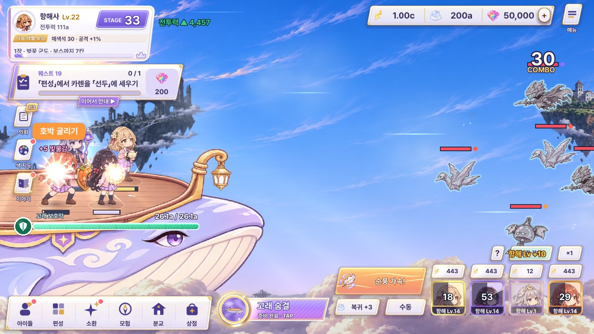
img/battle/bt_upgrade_pop_1280x720.jpg · img/battle/b1_hud_1280x720.jpg
BT2-2 d 전투
왼쪽 보조 버튼 (색 지도 · 이야기)
scripts/hud.gd _side_tile · _sparkle · paint_gain
지금: 크림 동그라미 + 흰 글자, 이야기 반짝임은 금 고리. 「의뢰」 칸이 빠지면(c) 위쪽이 빈다.
방향: 「책상 위 소품」 — 팔레트 · 그림책 그림이 그대로 버튼.
- 시안에 담을 상태
- 평소 · 빨간 점 · 반짝임(볼 이야기) · +N 빛물감 솟음 · 잠김 · 의뢰 칸 빠진 뒤 자리
- 시안 방향
- A 기운 책갈피 탭
- B 소품 그림만 (판 없음)
- C 세로 띠 한 장
img/battle/b1_hud_1280x720.jpg · img/battle/bt_now_1280x720.jpg (폭주 중 = B3)
BT2-3 d 전투
콤보 숫자
scripts/hud.gd show_combo · assets/ui/combo_text.gdshader
지금: 오른쪽 위 큰 숫자 + 「COMBO」. 폭주까지 30% · 62%에서 색만 바뀌어 얼마나 남았는지 모른다.
방향: 「폭주까지 남은 길」 — B3 폭주 엠블럼으로 이어지는 게이지가 보인다.
- 시안에 담을 상태
- 5 · 30% · 62% 달아오름 · 끊김(흐려짐) · 보스 판 있을 때 · 폭주 직전 → B3로 넘김
- 시안 방향
- A 숫자 + 폭주 게이지 호
- B 붓 자국 위 숫자
- C 작은 알약 — 달아오르면 커짐
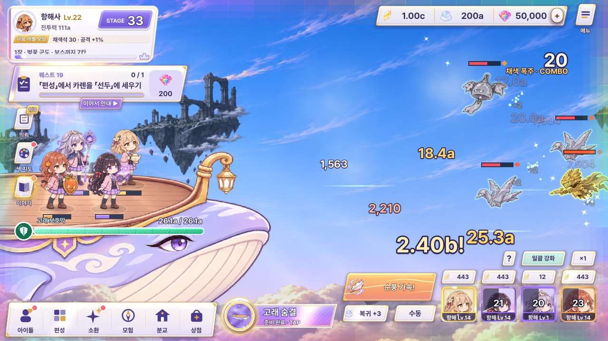
img/battle/bt_numbers_1280x720.jpg · img/after/boss_rapid_hits_f3_1280x720.jpg
BT2-4 d 전투
피해 숫자 · 처치 보상 글자 (+N 바람 조각)
scripts/main.gd show_damage · hud.gd combat_text · pop_gold · fly_gold
지금: 크림 · 금 글자 + 남색 테, 평타 · 약점 · 스킬 · 치명 · 궁극기가 크기로만 갈린다. 보호막 회복은 숫자 없이 빛만.
방향: 「붓 글씨 숫자」 — 단계가 모양으로도 구분되고, 많이 쌓여도 읽힌다.
- 시안에 담을 상태
- 평타 · 약점 · 스킬 · 치명타 · 궁극기(!) · 많이 쌓일 때 · +N 바람 조각 · (안) 보호막 회복 +N
- 시안 방향
- A 단계별 글자 모양 (약점 = 마름모 꼬리표, 치명 = 금박)
- B 때린 아이 속성 색 테
- C 평타는 작게, 궁극기는 합계 하나로 크게
img/after/hud_fresh_1280x720.jpg · img/battle/bt_numbers_1280x720.jpg (오른쪽 황금 잿빛)
BT2-5 d 전투
적 체력 막대 · 약점 표시 · 황금 잿빛
scripts/enemy.gd _draw_bar · main.gd _make_elite
지금: 빨간 사각 막대 + 약점 마름모. 황금 잿빛은 금빛 물들임 + 반짝이뿐이라 「체력 3배 · 보상 6배」가 안 보인다.
방향: 「잿빛 꼬리표」 — 보스 판(a)의 작은 판 말투.
- 시안에 담을 상태
- 가득 · 깎임(지연 몫) · 약점 속성 · 황금 잿빛 · 무리(15마리) 겹침 · 처치
- 시안 방향
- A 기운 미니 막대 + 약점 동그라미
- B 막대 대신 발밑 고리
- C 맞을 때만 보이는 막대 + 황금 왕관
전투 3 · 전투 순간 알림 d · 5 전투
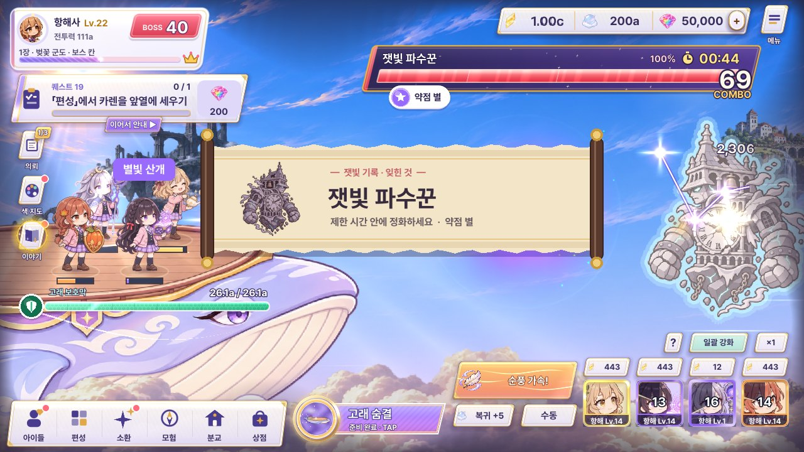
img/after/boss_intro_f2_1280x720.jpg
BT3-1 d 전투
보스 등장 두루마리 · 파수꾼 경고 띠
scripts/hud.gd boss_intro → hud_skin.gd boss_intro · first_voyage.gd banner
지금: 크림 두루마리에 보스 그림 + 이름. 위의 남색 보스 판(a)과 결이 다르다.
방향: 「잿빛 기록 펼침」 — 보스 판 B와 같은 남색 · 금 테로 이어진다.
- 시안에 담을 상태
- 파수꾼(10칸) · 장 보스(100칸) · 첫 항해 경고 · 약점 있음/없음 · 1600
- 시안 방향
- A 남색 기운 띠가 화면을 가로지름
- B 두루마리 유지 + 남색 · 금 테
- C 보스 실루엣 짧은 컷인

img/battle/bt_retry_1280x720.jpg
BT3-2 d 전투
전투 실패 띠 RETRY · 도시락 되살림 띠
scripts/main.gd _fail · 도시락(heal) · hud.gd banner
지금: 성공 띠와 같은 크림 판에 빨간 「RETRY」. 팁이 한 줄 작은 글자.
방향: 「다시 붓을 드는 순간」 — 실패는 차분하게, 다음에 할 일(강화 · 보호막 · 복귀)이 먼저.
- 시안에 담을 상태
- 시간 초과 · 보호막 붕괴 · 두 번 연속(복귀 권유) · 도시락으로 되살림
- 시안 방향
- A 잿빛 번짐 + 팁 버튼
- B 고래가 흔들리는 연출 + 팁 카드
- C 띠 없이 갑판 위 아이 말풍선
img/battle/bt_upgrade_pop_1280x720.jpg · img/after/45_levelup_strip_after_1280.jpg
BT3-3 d 전투
강화 반응 (항해 Lv +N · 전투력 ▲ · +N 빛물감)
scripts/hud.gd card_level_up · power_up · paint_gain · levelup_fx.gd
지금: 노랑 · 초록 · 분홍 글자가 각자 다른 곳에서 솟는다 (모양이 제각각).
방향: 「작은 축하 도장」 — 같은 가족의 작은 반응.
- 시안에 담을 상태
- 한 번 · 길게 눌러 연속 · ×10 · 일괄 강화(4칸 동시) · 빛물감 +5
- 시안 방향
- A 금빛 리본 숫자
- B 숫자 + 별가루
- C 카드에 찍히는 도장
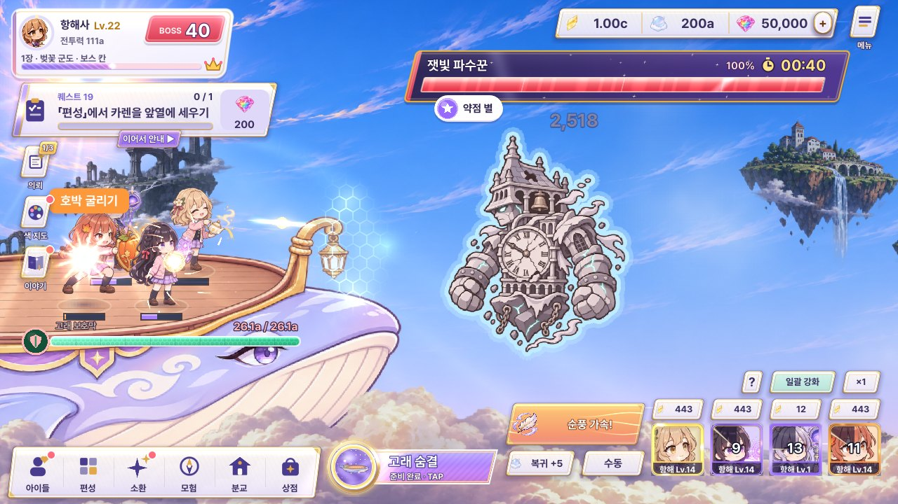
img/after/hud_boss_1280x720.jpg · img/battle/bt_numbers_1280x720.jpg (말풍선)
BT3-4 d 전투
아이 머리 위 · 발밑 표시 (스킬 이름표 · 말풍선 · 쿨타임 막대 · LEVEL UP)
scripts/main.gd show_skill_tag · bark · hero.gd _draw_skill_bar · levelup_fx.gd
지금: 이름표는 속성 색 사각 알약, 말풍선은 흰 판, 발밑 막대는 사각형 — 아이 상세 A의 말풍선 · 반응과 다르다.
방향: 「아이 곁 작은 소품」 — 아이 상세 A · 반응 말풍선과 같은 말투.
- 시안에 담을 상태
- 스킬 이름 · 말풍선(보스 · 정화 · 궁극기) · 쿨타임 막대(곧 스킬 깜빡임) · SS/신화 발밑 고리 · LEVEL UP
- 시안 방향
- A 붓 글씨 이름표
- B 말풍선 꼬리 + 속성 점
- C 발밑 막대를 고리로
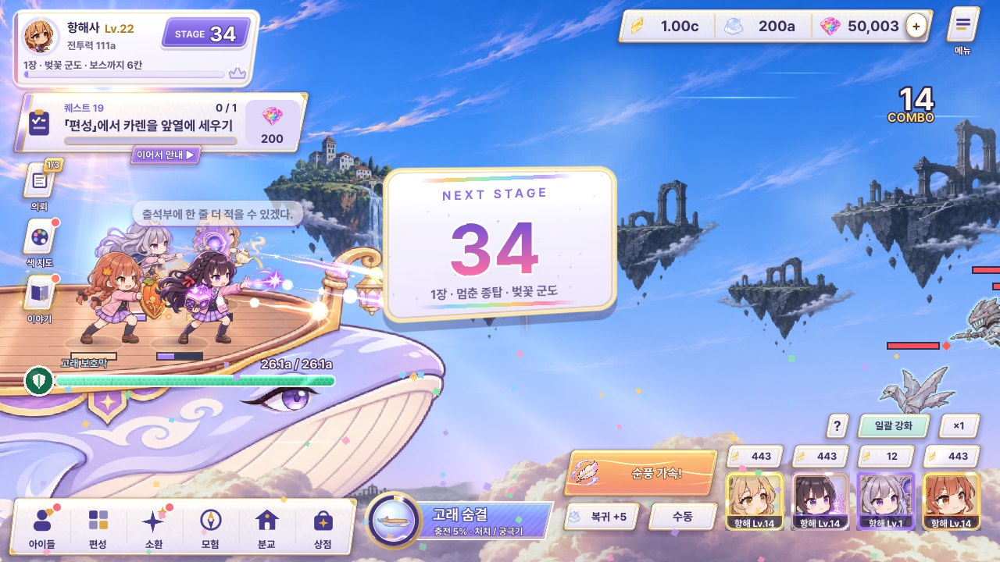
img/after/shield_hit_f2_1280x720.jpg
BT3-5 d 전투
고래 보호막 피격 막
scripts/barrier.gd · main.gd barrier_hit (막대는 a)
지금: 맞은 자리에서 육각 무늬가 퍼지고 파랑 → 주황 → 빨강. 세계관(물감 · 고래)과 결이 약하다.
방향: 「물감 막」 — 육각 대신 고래 무늬 · 물감 번짐.
- 시안에 담을 상태
- 가득 · 반 · 25% 아래 깜빡임 · 무적 · 도시락 회복
- 시안 방향
- A 물감 번짐 막
- B 고래 무늬 레이스
- C 육각 유지 + 색만 정리
전투 4 · 모험 전투 (#61) d · 5 전투

img/battle/bt_adv_element_1280x720.jpg · img/battle/bt_adv_castle_1280x720.jpg · img/battle/bt_soul_1280x720.jpg
BT4-1 d 전투
콘텐츠 전투 공통 틀 — 쓸 수 있는 것 · 없는 것 표시 (#61)
scripts/hud.gd refresh (set_stage_visible · wind_btn.disabled) · whale_breath.gd can_use
지금: 순풍은 이유 없이 흐리고, 복귀 · 퀘스트 카드 · 강화 버튼은 항해 때와 똑같이 보인다. 대결에서는 숨결이 「준비 완료 · TAP」인데 쓸 수 없다.
방향: 「입장권 전투 모드」 — 그 콘텐츠에서 쓰는 것만 밝게, 안 되는 것은 이유 한 줄.
- 시안에 담을 상태
- 원소섬 · 잿빛성 · 신전 · 등급전 · 회랑 각각의 숨결 · 순풍 · 복귀 · 강화 · 퀘스트 표시 · 나가기(포기) 유무
- 시안 방향
- A 아래 줄 전체가 「모험 띠」로 바뀜
- B 같은 자리에 잠금 꼬리표 + 이유
- C 안 되는 버튼은 숨기고 남은 칸을 크게
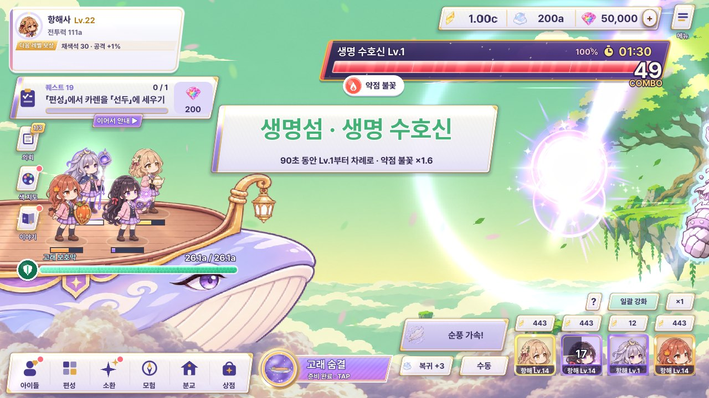
img/battle/bt_adv_element_start_1280x720.jpg · img/battle/bt_adv_element_1280x720.jpg
BT4-2 d 전투
원소섬 전투 (수호신 Lv 연속)
scripts/main.gd start_dungeon("element") · _next_guardian · hud.set_boss
지금: 보스 판에 「생명 수호신 Lv.2」만. 90초 안에 어디까지 왔는지 · 다음 관문(5 Lv마다)이 안 보인다.
방향: 「수호신 계단」 — Lv 계단과 관문이 보스 판 옆에.
- 시안에 담을 상태
- Lv.1 시작 · 다음 Lv 등장 · 관문 수호신 · 시간 끝 · 최고 기록 넘음
- 시안 방향
- A 보스 판 아래 Lv 계단
- B 통합 판 자리에 섬 문장 + 도달 Lv
- C 화면 위 얇은 Lv 줄

img/battle/bt_adv_castle_1280x720.jpg · img/battle/bt_adv_castle_start_1280x720.jpg
BT4-3 d 전투
잿빛성 전투 (버틴 시간 · 장비 구간)
scripts/hud.gd refresh 잿빛성 분기 · main.gd _castle_tick · Adventure.CASTLE_BANDS
지금: 보스 판을 빌려 「잿빛성 · 장비 2개 · 다음 28초」 한 줄 + 시간 막대.
방향: 「버티기 시계」 — 30초 구간마다 장비 상자가 열리는 시계 띠 (#56 #62 보상과 이어짐).
- 시안에 담을 상태
- 0초 · 구간 도달(상자 열림) · 2분 넘음 · 보호막 위험 · 3분 완주
- 시안 방향
- A 구간 눈금 막대 + 상자
- B 둥근 시계
- C 얻은 장비가 갑판 옆에 쌓임
img/battle/bt_adv_temple_start_1280x720.jpg
BT4-4 d 전투
신전 승급 시련 전투
scripts/main.gd start_dungeon("temple") · _spawn_dungeon_boss
지금: 「3등 항해사 승급 시련」 보스 판 + 60초. 계급(승급) 느낌이 없다.
방향: 「승급 의식」 — 계급 휘장과 남은 시간이 주인공.
- 시안에 담을 상태
- 시작 · 반 · 10초 남음 · 성공 · 실패
- 시안 방향
- A 휘장 + 보스 판
- B 신전 기둥 액자
- C 시간 고리 중심
img/battle/bt_adv_castle_start_1280x720.jpg · img/battle/bt_adv_element_start_1280x720.jpg · img/battle/bt_adv_temple_start_1280x720.jpg
BT4-5 d 전투
콘텐츠 시작 · 끝 띠 (시작 · 관문 · CLEAR · 실패 · N초 버팀)
scripts/main.gd start_dungeon · _dungeon_end · hud.gd banner
지금: 일반 크림 띠에 콘텐츠 색 글자만 바뀐다.
방향: 「입장 문장」 — 콘텐츠마다 문장(섬 · 성 · 신전) 하나.
- 시안에 담을 상태
- 원소섬 · 잿빛성 · 신전 시작 · 관문 · CLEAR · 실패 · 3분 완주
- 시안 방향
- A 콘텐츠 문장 + 기운 띠
- B 입장권이 찢어지는 연출
- C 배경 그림 카드가 넘어감
끝난 뒤 결과 팝업은 D5-1 ~ D5-4.
전투 5 · 대결 · 하늘 이벤트 d · 4 전투

img/battle/bt_soul_1280x720.jpg · img/inventory/inv_duel_1280x720.jpg
BT5-1 d 전투
대결 장면 HUD (등급전 · 기억의 회랑)
scripts/duel_scene.gd _build_ui · 이름판 · 건너뛰기 · 상대 이름표 · 내 아이 체력 막대
지금: 오른쪽 위 크림 이름판 + 「건너뛰기」. 항해 HUD(퀘스트 · 메뉴 바 · 강화 · 순풍 · 숨결)가 그대로 남는다.
방향: 「마주 선 두 고래」 — 좌우 대칭 VS 화면.
- 시안에 담을 상태
- 등급전 · 회랑 · 우리 아이 쓰러짐 · 상대 보호막 깨짐 · 건너뛰기
- 시안 방향
- A 위쪽 좌우 이름판 + 가운데 VS
- B 아래쪽 대결 띠 (항해 HUD 숨김)
- C 상대 이름판만 남색으로 정리

img/battle/bt_duel_end_1280x720.jpg
BT5-2 d 전투
대결 시작 · 끝 띠 (VS · 승리! · 패배)
scripts/duel_scene.gd hud.banner
지금: 일반 크림 띠에 금 글자 「승리!」.
방향: 「결판 도장」.
- 시안에 담을 상태
- VS · 승리 · 패배 · 건너뛴 뒤
- 시안 방향
- A 대각 VS 컷
- B 고래 문장 도장
- C 깃발이 올라감
img/battle/bt_shower_drops_1280x720.jpg · img/battle/bt_shower_banner_1280x720.jpg
BT5-3 d 전투
하늘 이벤트 · 색 소나기
scripts/sky_events.gd _shower
지금: 일반 띠 + 팔레트 아이콘이 떨어진다. 눌러야 하는 것인지, 몇 초 남았는지 모른다.
방향: 「누르고 싶은 물방울」 — 반짝이는 물감 방울 + 남은 시간.
- 시안에 담을 상태
- 띠 · 물방울이 떨어짐 · 누름(+5) · 끝(모은 수)
- 시안 방향
- A 물감 방울 + 위쪽 남은 시간
- B 팔레트 유지 + 테두리 빛
- C 화면 가장자리 빗줄기
이번 라운드에 새로 그림 (a)
img/after/title_ready_1280x720.jpg
A1 a
타이틀 · 로딩 · 터치해서 시작
scripts/title.gd — 시안 A 붓 자국 로고 (#1) · 부트 스플래시 · 준비 실패 문구 포함
img/after/hud_late_1280x720.jpg
A2 a 전투
전투 HUD 시안 B
hud.gd · hud_stage_panel · hud_boss_panel · hud_stage_card · hud_shield_bar — 왼쪽 위 통합 판 · 기운 보스 판 · 스테이지 전환 카드 · 보호막 막대 (#4 #6 #31 #35 #41 #57). 조작 줄 · 퀘스트 칸은 자리만 옮겼다 (#5 #50) → BT1-3 · BT1-5
img/after/formation_1280x720.jpg
A3 a
편성 시안 B (팀 라인업 · 등급전 덱)
scripts/ui/formation_page.gd (#37 #38 #60)
img/after/hero_info_1280x720.jpg
A4 a
아이 상세 시안 A (+ 레벨 업 빛 고리 · 기뻐하는 반응 시제품)
scripts/ui/hero_page.gd · level_burst.gd · hero_react.gd (#43 #45) — 전투에서 길게 눌러 여는 정보 창도 같은 화면
img/after/star_up_card_1280x720.jpg
A5 a
승급 확인 시안 2 (+ 각성하기)
scripts/ui/star_confirm.gd (#59) — 최고 성급에서 같은 카드가 「각성하기」
img/after/gear_detail_1280x720.jpg
A6 a
장비 작업대 시안 A (+ ⓘ 말풍선 · 덧칠)
scripts/ui/gear_bench.gd (#52 #53) — 장비 목록(D1-4)은 아직
다른 에이전트 시안 진행 중 (b)
img/after/summon_pickup_1280x720.jpg
B1 b
소환 탭 (픽업 · 상시 출석부)
design/mockups/feedback70/summon (#22 #39 #40) — 확률 정보 · 별가루 교환소는 시안에 없어 D8-4 · D8-5로

img/after/gacha_ten_result_1280x720.jpg
B2 b
소환 연출 (칠하기 · 등급 · SS · 10연 결과 · 신화 조각 · 중복 별가루)
scripts/gacha_show.gd — summon 시안 (#23~#27)
img/after/stage_clear_transition_f2_1280x720.jpg
B3 b 전투
스테이지 정화 · 채색 폭주 · 순풍 가속
design/mockups/feedback70/clear_fever (#15 #17 #30)

img/before/color_map_1280x720.jpg
B4 b
색 지도 서랍
scripts/color_world.gd — design/mockups/feedback70/colormap (#28 #29 #66)

img/before/color_restore_f3_1280x720.jpg
B5 b
색 복원 장면 · 영구 보너스 (story-perm)
rewards 시안 (#48) — 장소 이야기 대사창은 D9-3을 따름
img/after/reward_popup_1280x720.jpg · img/after/quest_reward_popup_1280x720.jpg
B6 b
보상 팝업 (아이콘 · 눌러서 보기) — 퀘스트 완료 · 장 보스 첫 정화 · 원소섬 소탕 등 일반 보상
scripts/reward_popup.gd — rewards 시안 (#34 #58). 특정 순간의 팝업(출석 · 항해일지 · 레벨 업 · 귀환 · 모험 결과 · 상점 · 첫 감상)은 d로 따로
없앨 예정 (c)
img/after/start_popup_1_1280x720.jpg (왼쪽 「의뢰 완료 · 떡집 아주머니」 · 「의뢰」 칸)
C2 c
의뢰 완료 토스트 · 왼쪽 「의뢰」 칸 · 복귀 확인의 의뢰 문구
island_requests.gd _toast · hud.gd side_box (#49)
전체 목록
| 번호 | 화면 | 분류 | 묶음 | 캡처 |
|---|